生成时间：2026-10-23T11:41:27+08:00
今日保留论文数：17
内容构成：今日新文 17 篇；补充推荐 0 篇；经典旧文精读 0 篇
阅读分层：重点精读 4 篇；相关简报 13 篇。精读依据科学贡献筛选，简报保留方法、结论及局限。
数据源警告
- 本次有 2 个数据源访问异常；完整错误已保留在运行日志中，日报只显示摘要。
- 其他来源：2 个异常。
- 主要错误类型：其他 2 次。
高能天体物理重点
1. Search for Ultra-Relativistic Magnetic Monopoles with LHAASO-KM2A
- 来源：arXiv / astro-ph.HE
- 链接：https://arxiv.org/abs/2610.30968
- 作者：Zhen Cao, F. Aharonian, Y. X. Bai, Y. W. Bao, D. Bastieri, X. J. Bi, Y. J. Bi, W. Bian
- 公告 / 来源日期：2026-10-23
- 阅读层级：重点精读
- 评分：novelty 8/10，importance 8/10，relevance 10/10，final 9.70/10
- 推荐理由：1438天KM2A填补磁单极速度窗口并给出新上限，重点核背景和模型依赖
中文题目：LHAASO–KM2A在超相对论速度窗口搜索宇宙磁单极
做了什么：磁单极若穿过大气，会沿途持续注入能量，形成与普通宇宙线不同的空气簇射。作者使用LHAASO–KM2A完整阵列2021年7月至2025年7月、1438.81个有效观测日的数据，在洛伦兹因子$10^{5}$、$10^{6}$和$10^{7}$三个基准点搜索这种粒子。分析先挑出缪子贫乏的候选，再利用电磁粒子的横向形状、簇射年龄与天顶角训练多层感知机；残余强子背景由真实数据控制区约束，而非完全依赖稀少的极端尾部模拟。
没有发现相对背景的显著过量。90%置信上限分别约为2.56×$10^{-16}$、2.24×$10^{-18}$和8.8×$10^{-19}$ $\mathrm{cm}^{-2}\,\mathrm{s}^{-1}\,\mathrm{sr}^{-1}$，均指假定各向同性的磁单极通量。最高洛伦兹因子处比约$10^{-15}$量级的Parker天体物理界限低三个数量级以上，但不同速度下提升并不相同；它是指定能损与探测模型下的新上限，不是磁单极存在的证据。
为什么重要：传统磁单极搜索分别擅长慢粒子、在水冰中发光的相对论粒子或更高能空气簇射，不同速度区间的灵敏度并不连续。KM2A的大面积电磁与地下缪子阵列使“持续产生、年轻而紧凑”的簇射特征成为可用辨识信息。本文的推进在于把这一物理区别转成经数据控制区验证的实际搜索，并填补部分既有窗口；与Parker界限的比较则连接了直接实验和银河磁场存续论证，两者假设不同。
理论 / 观测 / 仪器方法价值：对高能阵列分析最可借鉴的是在极低背景区组合两层判别：缪子含量先压低普通强子，横向形态再区分残余事件；同时用相邻控制区检验分类器各输入分布能否迁移到信号区。强子模拟在数百万分之一的尾部统计不足时，不能把“模拟没剩事件”当作“真实背景为零”。数据驱动模板与其形状包络必须一起进入统计推断。
为什么应该关注：这与LHAASO、IACT及未来大面积阵列中的异常粒子搜索直接相关，但不能照搬伽马射线能量重建或固定切选。应关注不同天顶角的接受度、极少缪子事件的模板可靠性，以及分类器是否在真实尾部背景上保持校准。后续最有用的是扩展速度和质量基准、提高尾部控制样本，并检验不同相互作用模型下通量上限的稳定范围。
展开详细解读：文章讲解、背景、理论、重点章节、图表与相关工作
文章详细讲解
科学问题：没有看到磁单极究竟能排除多少宇宙通量，取决于是否知道它经过大气后的可观测形态。对超相对论磁单极，电子对产生和光核过程可在轨迹上不断激发子簇射，抵达地面的电磁成分仍较年轻、横向更紧凑，缪子则少。作者据此寻找一种形状和组成均异常的事件，而不是仅寻找总粒子数特别大的簇射。
作者怎么做：完整KM2A由5216个电磁探测器和1188个缪子探测器组成。分析剔除银河平面附近与已知伽马源区域，以抑制同样缪子贫乏的真实伽马事件；能量用针对磁单极训练的回归估计，再按三个洛伦兹因子分别设能量和缪子比信号区。分类器输入六个形态或几何量，五折训练降低对某一训练划分的依赖，最终在分类器输出分布上作带系统误差的似然推断。
关键结果：三个基准点都没有显著超额，表2列出的观测上限在不同速度下跨度很大。较低速度的选择效率约16.65%，而最高速度约97.10%；信号能量沉积与筛选接受度同时变化，所以不能把三个点理解成单纯按曝光缩放。最高速度的高分类得分区域没有事件，但整套搜索包含背景区域及其他速度点，不能将它简写成“全样本零事件”。
局限和下一步：结果采用参考质量$10^{5}$ GeV和相应高洛伦兹因子的模拟；质量近似不敏感依赖制动辐射及减速可忽略。电子和弥散伽马的残余贡献是基于外推被忽略，并不等于被直接证明不存在。控制区到信号区的形状不变性也是条件，未来应扩大控制统计、验证极端低缪子区并给更多能损模型基准，而不能用本次未检出来否定所有磁单极理论。
关键结果是怎么做出来的
第一步是把物理图像落到有效曝光。1438.81天是扣除不合格运行后的观测时间，天空掩膜还会减少有效立体角。对各向同性通量，事件率由方向相关有效面积积分决定，因此时间够长不意味着所有天区都获得同样限制。参考磁单极在大气中的连续子簇射模拟，负责连接入射粒子到ED/MD实际响应。
第二步是建立适用于该粒子的能量和缪子比。作者用50米附近电磁粒子密度及天顶角训练XGBoost能量回归，以免普通宇宙线的重建标尺直接引入偏差。缪子比使用距轴15–200米的缪子数和400米内电磁成分，加入很小的正数以处理零计数。最低速度下极端低缪子尾部被排除，因为该区信噪比与模板描述不可靠。
第三步是处理强子模拟统计耗尽的问题。能量与缪子切选后，强子保留比例约5.5×$10^{-6}$；作者转而使用数据侧带建立形态模板，并检查低缪子比区域的分布是否趋于稳定。图4对六个输入逐一展示参考控制区、相邻切片包络与信号区数据。这比只检查一个最终分类分数更能定位迁移假设失效的位置。
第四步是用多层感知机进一步区分形状。输入含天顶角、簇射年龄、Q40、PINCness、紧致度和电荷加权平均半径，输出越接近信号端意味着形态更像模拟磁单极。五折分类AUC约0.968说明整体区分能力，但AUC不等价于极端尾部的背景预测误差；后者仍需控制区包络、自由背景归一化和最终拟合约束。
第五步是把系统误差带进90%上限。不同强子相互作用模型改变信号选择效率约4.1%、9.3%、1.8%，另有约2%的能量迁移影响；这些归一化误差与背景形状变化采用相应约束项进入剖面似然。表2同时给期望及观测限制，最低速度观测值比期望弱并不自动表示发现；最终用CLs方法控制排除强度，图2才汇总与其他实验的比较。
展开背景、理论、公式、模型和章节导读
背景知识
磁单极指携带孤立磁荷的粒子。Dirac论证说明磁荷若存在，可与电荷量子化联系，但这种理论动机并不给宇宙中今天必然可探测的通量。统一理论、早期宇宙产生史和暴胀稀释会影响其丰度，因此直接寻找和天体物理限制各自提供不同信息。这里不把没有信号解释为否定电荷量子化。
洛伦兹因子描述粒子总能量与静质量能之比。同一个速度区间可对应不同质量及总能量；论文的基准质量与洛伦兹因子共同定义模拟能量。极快磁单极的显著特征不是普通强子的一次初始碰撞，而是沿大气路径反复损失能量，因此簇射在不同深度被重新补充，地面图样会有所不同。
空气簇射阵列通常通过缪子含量区分伽马与强子，因为强子级联更容易产生介子及其衰变缪子。磁单极信号也可能缪子贫乏，所以“像伽马”仅是第一层筛选，仍需要年轻度、横向扩展和到达方向等信息。源掩膜削弱真实伽马污染，同时牺牲部分天空覆盖，二者必须在接受度中一致处理。
Parker界限来自磁单极从银河磁场汲取能量，不能过快耗尽维持中的磁场这一思想。它依赖银河磁场历史等天体物理条件；地面上限则依赖粒子能损与仪器响应。两条线可以比较，却不是相同假设下的两次测量。特别是最高速度处优于Parker三阶的说法，不能外推到图中所有速度。
基础理论 / 方法脉络
从能损到可观测量，首先要区分一次入射粒子的能量和地面重建能量。只有在质量足够大、传播中减速不显著时，固定洛伦兹因子的子簇射形态才近似不依赖质量。模拟要将能量沉积分配到不同深度，再通过大气传播和探测器响应得到电磁、缪子及时间信息。
缪子比压低强子背景后，六个形态变量捕捉互补信息。簇射年龄描述横向分布所反映的发展阶段；平均半径表征电荷集中程度；PINCness等量衡量横向分布是否规则。天顶角既改变穿过的大气厚度，也改变重建质量，不能将其分类能力全归因于粒子本征差异。
数据驱动背景的核心是假设在相邻缪子比区域，给定能量后的形态分布足够稳定。图4是这一假设的实测检查，并非数学定理；包络要把尚未解释的形状差异保留下来。如果信号区另有不同来源的背景或变量相关结构变化，侧带外推即可能失败，所以不能只以训练集精度作为可信度保证。
最终推断是有背景的稀有事件计数问题。分类器将多维事件压缩到一维分布，似然同时利用各箱信号形状、背景形状和计数，而不只用某个切点后剩余总数。归一化与形状干扰参数会改变可允许信号数；将这个数除以接受度和观测时间才得到具有面积、时间、立体角单位的通量上限。
公式与推导
推导从入射运动学到上限。以下前两式及曝光关系是教学整理，统计式与本文实施对应。以质量$m$、速度$v$定义$\beta=v/c$，则
这解释为何论文必须同时报告参考质量和洛伦兹因子，不能把速度标签直接当重建能量。
将连续能损写成示意预算：
$X$是柱深，左边单位为能量除以质量面密度；右侧仅用于理解电离、对产生和光核贡献，实际分析采用详细模拟而非用此式拟合数据。小减速条件是路径积分能损远小于入射能量，它限定质量近似不敏感的范围。
地面第一层诊断取论文定义
$N_\mu$与$N_{\rm EM}$来自规定半径范围，分子小常数避免零计数的对数奇点；它不是物理上的额外缪子。较小值表示缪子更贫乏，但零缪子尾部仍可能含有重建与背景模型问题。
第二层形态可用电荷加权平均半径说明：
$Q_j$是第$j$个电磁探测器的信号，$r_j$是到轴距离，故结果为长度。连续补充的年轻簇射可能更紧凑；实际分类器还使用其他五项信息，并由模拟与控制区共同校验，不按这一个量宣告粒子身份。
设第$i$个分类得分箱观察到$n_i$，预测信号形状为$s_i$、背景为$b_i$，则
$\mu$为非负信号强度，$\boldsymbol\theta$含效率和形状等干扰参数；$\pi$是系统误差约束项，并非所有量都自由变化。论文还允许背景整体归一化变化。
对每个待排除的$\mu$重新优化干扰参数，构造
双帽表示固定该信号强度时的最优值。这一步允许合理背景变化吸收部分形状差异，比把背景固定成一条确定曲线更保守；单侧上限还需按实现限制统计量方向。
以一致尾概率约定写CLs：
分母也常记作$1-p_b$，取决于原作者对背景尾概率的定义。以$CL_s=0.1$求90%排除边界；这个数不是“有90%概率存在磁单极”，也不是发现显著性。
最后将允许事件数连接到通量：
$T$为秒，有效面积包含切选、掩膜和方向响应，积分单位为面积乘球面度。效率与形状干扰已经影响$N_{s,90}$及接受度；不能再把同一效率损失重复除一次。至此，运动学、地面形状、计数推断和图2的通量单位形成闭合链条。
模型拟合 / 应用方法
输入是通过质量、天区、重建能量及缪子比选择的实测事件；信号模板来自三个洛伦兹因子的磁单极模拟。质量与运动学基准固定，不在这次似然里当连续参数拟合。因而上限描述的是这些点上的模板检验，不是对整个磁单极质量—速度空间的联合测量。
背景形状取自控制数据，整体规模允许浮动，形状包络在平滑后变为干扰参数。读者需要同时看控制区覆盖与得分分布的拟合：总数吻合不能保证最高分尾部吻合，六个输入一维吻合也不严格保证所有相关性相同。论文给出的检验支持当前使用范围，但不消除更复杂背景的可能。
模型系统误差由替代强子产生模型、能量迁移和背景形状变化传播。三种速度的效率影响不同，不能使用一个统一百分比代表所有基准。归一化采用对数正态等约束、形状采用高斯变形后作剖面，允许数据在合理范围内调整这些参数，避免将模拟误差错误当成信号。
论文报告期望和观测90%限制，而未报告显著发现。观测限制较弱可能来自背景涨落或模板容许度；要称为新粒子必须另行建立发现统计、全局试验校正和独立验证。后续应用可做注入回收及侧带留出检验，但这些是可继续的诊断，不应被写成本文已额外完成的工作。
重点章节 / 结果段落怎么读
先读正文信号模拟与表1：弄清参考质量、三个洛伦兹因子、能量单位和缪子比窗口，再判断哪类事件实际上被搜索。特别留意低速度零缪子尾部为何未被保留。
再读背景与分类器段及图4：把控制区的形状稳定性当作需要证据的假设，逐项看六个输入的信号区数据与包络，而非只看AUC。
然后读统计方程和系统误差段：分清自由背景归一化、形状干扰和信号效率误差各控制哪一部分，理解期望上限不是固定背景的简单零计数公式。
最后连读表2与图2：先在同一速度比较期望与观测，再比较不同实验。Parker界限和直接阵列约束的假设要分开，最高速度的优势不代表所有速度均同样强。
关键图表与解读
图2
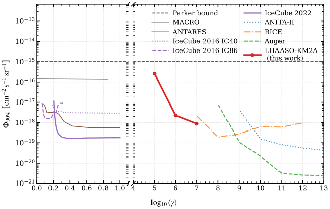
图注：LHAASO–KM2A给出的磁单极通量90%置信上限（红色实线），与天体物理Parker界限［原文11］及其他实验的现有限制比较。
怎么看这张图：沿洛伦兹因子轴读红线：最快基准点达到8.8×$10^{-19}$ $\mathrm{cm}^{-2}\,\mathrm{s}^{-1}\,\mathrm{sr}^{-1}$。不同实验速度响应及假设不同；上限不是发现，三阶优势仅适用于最高速度附近。 支持本文核心论证，并直接对照所存HTML图注核验
来源与置信度：arXiv HTML；source verified；https://arxiv.org/html/2610.30968v1/Monopole_flux_limits_Final.svg
图4
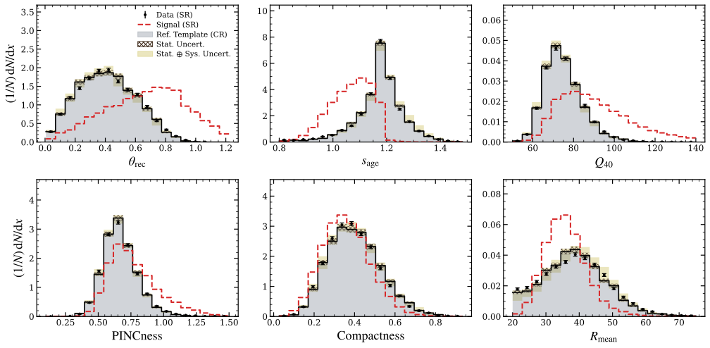
图注：对洛伦兹因子γ=$10^{5}$分析的六个多层感知机输入观测量，验证簇射形状的不变性。黑色阶梯为参考模板，黄色阴影纳入相邻控制切片，红色虚线为模拟磁单极的形态。信号区数据（黑点）与从控制区提取的模板表现出很好的一致性。
怎么看这张图：先比较黑点与黄色包络，再看红虚线与背景的差别。图支持控制区向信号区迁移的假设；六个一维投影吻合仍不严格证明全部变量相关性相同。 支持本文核心论证，并直接对照所存HTML图注核验
来源与置信度：arXiv HTML；source verified；https://arxiv.org/html/2610.30968v1/1e10_Rue_cut_stability_compact.svg
强相关工作
Dirac关于磁荷和电荷量子化的基础论文解释了搜索动机；Parker的银河磁场论证则提供天体物理比较标尺。这些是本文实际参考文献中的基础关联，并非同一观测的重复分析。检索时应把“磁荷量子化”与“Parker flux bound”分开，前者不直接给后者的通量。
Pierre Auger超相对论磁单极搜索和IceCube相对论磁单极搜索是直接同类比较。它们使用不同介质与信号通道，对速度、能损和接受度的响应不同；KM2A的新增信息来自电磁/缪子联合的空气簇射形态。图2可比较上限，但具体覆盖条件应回到各实验模型，不能仅按曲线高低排序所有实验。
同一事件 / 同类源线索：
相似工作：
基础理论 / 方法工作：
相反观点 / 张力线索：
（未提供）
2. Natural Chlorine Enhances Antineutrino Detection in the Deep Ocean
- 来源：arXiv / astro-ph.IM
- 链接：https://arxiv.org/abs/2610.30754
- 作者：Ruike Cao, Iwan Morton-Blake, Donglian Xu, Qichao Chang, Shuhua Hao, Jingtao Huang, Weilun Huang, Yifan Jiang
- 公告 / 来源日期：2026-10-23
- 阅读层级：重点精读
- 评分：novelty 8/10，importance 8/10，relevance 10/10，final 9.70/10
- 推荐理由：天然氯俘获延迟符合加深海模拟与实验验证，明确提升MeV天文能力
中文题目：天然海水中的氯如何帮助深海望远镜标记MeV反中微子
做了什么：深海中微子望远镜的光学模块间距很大，单次MeV相互作用产生的光子通常不够多，难以与天然放射性和暗噪声分开。本文利用海水中的氯：电子反中微子逆β衰变产生正电子和中子，前者先发光，后者被氯俘获后释放总能量约8.6 MeV的γ级联，形成延迟光脉冲。相比氢俘获的2.2 MeV，氯的信号更亮且俘获更快，因而可用时间与模块内角度的符合关系压低偶然背景。
作者基于TRIDENT站址水性质和约10立方千米阵列配置模拟，并在锦屏地下实验室用盐水、光学模块和AmBe中子源检验这一原理。指定超新星模型下，加入延迟标记可把5σ距离从约50 kpc提高到100 kpc以上；这是整阵列的未来模拟结果。实验室NaCl配置的相关中子俘获信号超过3.4σ，俘获时间约0.14±0.04 ms；它验证盐水中子标记，不是探测到超新星反中微子。
为什么重要：天然介质不仅决定光传播，也能提供选择特定反应的核物理标记。氯的丰度虽低，热中子俘获截面大，因此无需向海洋人为掺杂便可能获得更明显的延迟信号。贡献是把材料性质、单模块符合策略、整阵列超新星灵敏度和地下原理实验连接起来；是否兑现距离增益仍取决于真实海洋噪声、阵列布设与超新星谱。
理论 / 观测 / 仪器方法价值：值得借鉴的是允许信号效率下降，以更大的背景压低换取更好的爆发显著性。论文把只选即时光与加入中子标记直接比较，后者并非“探测到更多每一次反应”，而是在给定爆发时间窗内减少噪声。对多光电倍增管模块，时间聚集、命中管数、方向结构及邻近模块否决可以共同构建物理上可解释的事件选择。
为什么应该关注：对天体中微子研究，它为主要面向高能粒子的深海设施增添MeV超新星通道，尤其值得检验与现有高能触发系统能否共存。下一步应在海上长期数据中测量生物发光变化、偶然符合尾部和缪子诱发相关背景，再评估触发假警报及不同超新星谱。实验室已有原理证据与完整天文发现能力之间，仍需这条现场验证链。
展开详细解读：文章讲解、背景、理论、重点章节、图表与相关工作
文章详细讲解
科学问题：稀疏大体积阵列如何辨认低能反中微子，而不只是统计所有光学噪声的集体上升？逆β衰变同时提供一个正电子和一个中子，二者时间相关。困难在于海水氢俘获的低能γ很难产生足够被同一个模块看见的光；氯增强延迟能量后，作者尝试从“只计数”推进到更有反应特征的符合选择。
作者怎么做：在含31个三英寸光电倍增管的hDOM模块中，把20 ns内命中不同管的数量定义为符合级别CL。模拟要求即时CL至少9、延迟CL至少2，间隔小于0.3 ms，再加模块内方向一致性和邻近模块缪子否决。介质加入真实海水组分，背景含水与玻璃中的钾40、暗计数和深海缪子，使收益来自完整信号—背景比较。
关键结果：补充表2给出1米内的选取效率由只选即时信号约9.72%降至延迟标记约3.30%，背景却从每模块约0.043 Hz降至0.00028 Hz。对应指定10 kpc超新星在一秒内的信号从每模块0.212降至0.083，背景降得更快，显著性因此提高。不同超新星模型给出不同距离，不能把“超过100 kpc”理解为任意爆发都可探测。
局限和下一步：地下实验采用AmBe源，伴随4.4 MeVγ及中子，不是真实逆β衰变的能谱和空间分布。NaCl与NaCl加KCl配置的结果也不同，后者约2σ；实验切选并非完整阵列模拟的9/2阈值。现场还可能有时间变化的生物发光，当前没有完整建模。下一步需要实际海水长时数据和触发误报标定，才能将原理验证升级为天文性能。
关键结果是怎么做出来的
第一环是核物理竞争。海水中氯35原子数约占0.25%，氢约66.1%，但热中子俘获截面分别约43.6 barn与0.333 barn，前者约130倍。因此不能只按原子丰度判断中子最终在哪里被俘获。模拟包括其他海水组分，得到氯的重要贡献和约130微秒的特征时间，与纯水约200微秒不同。
第二环是从释放能量走到可触发光。8.6 MeV不是单个固定能量γ，而是俘获后的级联总能量；它经过物质相互作用产生可发切伦科夫光的带电粒子。探测效率受反应位置、光传播和模块朝向影响，故作者在探测器级模拟中统计不同PMT的近同时命中，而不是用释放能量比直接乘探测距离。
第三环是筛掉背景。钾40和暗计数很常见，偶然形成即时—延迟对的概率随两端单次率和时间窗增加。方向要求利用同一局部相互作用的光场结构；120米内相邻模块在150 ns内出现CL至少2则可否决部分缪子事件。补充表2逐层给效率与背景，使读者能够看出性能提升究竟来自哪项选择。
第四环是将一秒窗口中的信号背景转换为发现距离。图2分别采用27太阳质量Garching和30太阳质量Nakazato模型；后者可到约125 kpc。它们的中微子光度、能谱不同，论文比较其他仪器时甚至采用不同模型，因此跨实验曲线不是统一输入下的竞赛。主结果可靠的含义是同一配置加入延迟标记后的条件性增益。
第五环是地下实验提供独立原理检验。约0.5吨水箱、10 Bq AmBe源与hDOM在锦屏低缪子环境运行，盐水配置以源开/关对照检查相关信号。长于0.5 ms的时间差尾部估计偶然背景，短时分布加入指数俘获项作泊松拟合，并用伪实验校准检验统计量。NaCl俘获时间与模拟相容，但这一步不测量整阵列距离，也不保证海上相关背景同样低。
展开背景、理论、公式、模型和章节导读
背景知识
电子反中微子可与水中的自由质子反应，产生正电子和中子。正电子很快沉积能量，中子先减速再被原子核俘获。两种时间尺度自然分离，形成“即时—延迟”标签；它比单独一个光脉冲更有反应辨识力，但仍可能被随机巧合或相关放射性过程模拟。
稠密小型探测器常能收集足够光进行能谱重建，大型海水阵列则以公里尺度覆盖高能中微子事例。MeV反应的光程和光子数有限，只有靠近模块的反应能给较明显信号。增加总介质量与改善单事件判别是两条不同路线，不能把十立方千米几何体积全当作MeV的有效体积。
天然海水含氯和钾等元素。氯可以增加中子俘获信号，钾40同时增加放射性背景，二者不能只选有利一面。本文盐水加钾实验正是检查更接近海水条件的必要步骤，其显著性较低也提醒读者材料增强和环境噪声会共同决定收益。
超新星反中微子爆发持续时间和谱随前身星及坍缩阶段而变。探测距离是给定信号模型、搜索窗与背景下的统计结果，不能当作仪器固有常数。群体计数、局部符合和实时报警还对应不同误报控制问题；一秒Asimov显著性预报不是已经校准了全年盲搜触发率。
基础理论 / 方法脉络
俘获概率由单位体积目标数、截面与中子速度共同决定。热化之后，各元素竞争的总反应率可近似视为常数，等待时间于是接近指数分布；热化过程和几何逃逸会使最短时间区间偏离这个简单图像。作者的详细模拟负责处理实际传播，教学指数模型则帮助理解窗口为何不能无限缩短。
延迟能量更大可以提升命中多管的概率，却不保证每个中子都留下可检测标签。即时端和延迟端必须同时通过要求，联合效率通常更低。模块内部平均夹角等量进一步选取局部光源结构，因而灵敏度取决于真实光学响应，而非仅由截面和天然丰度决定。
偶然符合近似受两个独立单事件率之积控制。缩短时间窗可快速压低偶然对数，但太短又丢掉真实中子；选择约两个俘获时间量级的窗口是在两者之间折中。对于缪子产生的相关成对信号，简单乘积公式不适用，因此仍需要空间与邻模块否决。
爆发发现用整个阵列在指定窗口的总信号和背景计算，实验室原理检验则拟合源开状态的时间差分布并比较纯背景假设。两者统计量、输入样本和显著性含义不同。后者超过3.4σ不能与前者模拟5σ距离直接相乘或视作同一次发现的两个证据。
公式与推导
先写反应链：
这是本文采用的逆β衰变通道；正电子给即时光，中子俘获给延迟光。核反冲和阈值使两端可见能量不同，不能把俘获级联能量当作入射反中微子能量的直接测量。
热化后，各核素俘获率的教学表达为
$n_i$单位为每立方厘米、截面为平方厘米、速度为厘米每秒，故$\lambda_i$为每秒。以相同热中子谱比较氯和氢时，大截面可补偿较低丰度，但实际模拟仍需所有组分。
在空间逃逸可忽略且速率稳定时，某核素俘获比例为
这一步把“氯更容易俘获”变成可计算竞争比例；本文数值用具体海水组分获得，而不是把截面比130直接解释成130倍信号效率。
指数等待时间模型给出延迟窗接受率：
$t_1,t_2,\tau_c$须用同一单位。以约0.13 ms和0–0.3 ms示意，单纯时间窗可保留约90%；这只是教学近似，不能替代包含光阈值和几何的3.30%总效率。
对独立稀疏噪声，偶然符合数的教学近似是
两端率$R_p,R_d$为每秒，$\Delta t$为符合窗，$T$为观测时长，最后为无量纲计数。该式说明延迟标记的优势为何同时依赖阈值与噪声；相关缪子事件不满足独立条件，必须另行建模。
把超新星谱接到预期事件数，可写
$N_p$为有效目标数，$\dot N_\nu$为源的每时间每能量粒子数率，$\epsilon$含探测与选择。若谱、阵列及窗口固定，信号随$d^{-2}$变化；本式是论文模拟逻辑的教学归纳，不代表用一个常数效率实际计算所有事件。
本文一秒窗口的预期发现能力使用
$S,B$都是期望计数，属于Asimov数据集的显著性。在$S\ll B$且背景已知时趋近$S/\sqrt B$；背景非常低时应使用完整表达，不能只看信号效率判断是否更好。
实验室时间差拟合可整理为每箱期望
$b$是常数背景密度，$S$为相关事件归一化，$\tau_c$为俘获时间。长时尾部帮助确定背景，短时指数项检验相关中子俘获，不能把所有短间隔对都直接计作信号。
比较含相关项与无相关项的拟合：
零假设下部分参数不再可识别，因此本文用背景伪实验校准，而非盲目取$\sqrt{TS}$作高斯显著性。实验超过3.4σ与距离曲线的5σ分别对应此处和上面的两类统计问题，至此完整连接核反应、符合选择和两种检验。
模型拟合 / 应用方法
阵列预测的输入包括TRIDENT几何、海水光学与元素性质、PMT响应及指定超新星模型；不是拿真实超新星计数拟合。背景模型给水中钾40约10.78 Bq/kg、玻璃约61 Bq/kg及每管1 kHz暗率，还加入深海缪子。站址随时间变化的生物发光未被完整纳入，这是上线触发前必须实测的缺项。
选择参数首先定义20 ns符合级别，再设即时9、延迟2、0.3 ms窗口和角度/邻模块条件。输入、阈值、有效空间及分母必须相同，才可比较表2效率。该表的1米范围效率不应混用作整十立方千米阵列的平均效率；完整天文信号已经由探测器模拟积累。
地下实验使用不同盐配置和源开关样本，阈值随实验配置采用4/2或3/3等设置，因此它验证的是基本机制及时间尺度。背景从较长时间差尾部拟合，信号模型加入指数俘获项，统计检验通过伪实验重复背景处理。NaCl的时间尺度0.14±0.04 ms可与模拟约0.13 ms对照，但有限统计下不能据此检验所有海水组分。
误差和退化要按层分开：源谱改变距离，局部光学与阈值改变效率，偶然和相关噪声改变背景，实验中源几何改变俘获可见度。作者没有同时把这些全部作为统一后验边缘化。跨仪器曲线还采用不同超新星前身模型，故最稳健比较是同一阵列、同一信号模型的有/无延迟标记，而非仅取每条曲线最远端。
重点章节 / 结果段落怎么读
先看反应机制与补充表1：把元素数丰度、俘获截面、能量释放及时间尺度分别记下，理解少量氯为何有用，同时注意钾带来的噪声。
再看图1与补充表2：沿即时、延迟、角度和邻模块切选逐步跟踪信号效率与背景率。重点是背景降幅超过信号损失，而不是效率全面提高。
随后看图2：先比较同一超新星模型下有无中子标记，再看不同模型和仪器。读清一秒窗口、5σ及距离轴，避免把模拟发现范围当成实测结果。
最后看图3与实验统计段：分清AmBe中子源和反中微子，核对源开关、盐配置、指数时间常数和伪实验显著性。这一步支持机制，不替代海上大阵列验证。
关键图表与解读
图2
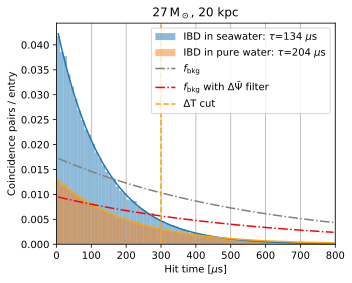
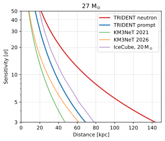
图注：左：应用正文选择条件后，每个hDOM中逆β衰变候选的预期即时—延迟时间差分布，包含真实逆β衰变和偶然背景对。信号按距离20 kpc的27太阳质量Garching模型［原文41］归一化，同时显示纯水情形供比较。右：只选即时信号与即时—延迟选择的核心坍缩超新星预期发现显著性随距离变化；并与IceCube采用20太阳质量Lawrence–Livermore模型［2、43］、KM3NeT采用27太阳质量Garching模型［14、10］的已发表灵敏度比较，均使用未考虑振荡的超新星通量。
怎么看这张图：左图看延迟时间结构与背景的分离，右图先比较同一模型有无延迟标记。不同实验信号模型不完全相同，不能将所有距离差归因于氯；图中是预报。 支持本文核心论证，并直接对照所存HTML图注核验
来源与置信度：arXiv HTML；source verified；https://arxiv.org/html/2610.30754v1/Neutron_27M_20.svg；https://arxiv.org/html/2610.30754v1/Sensitivity_compare.svg
图3
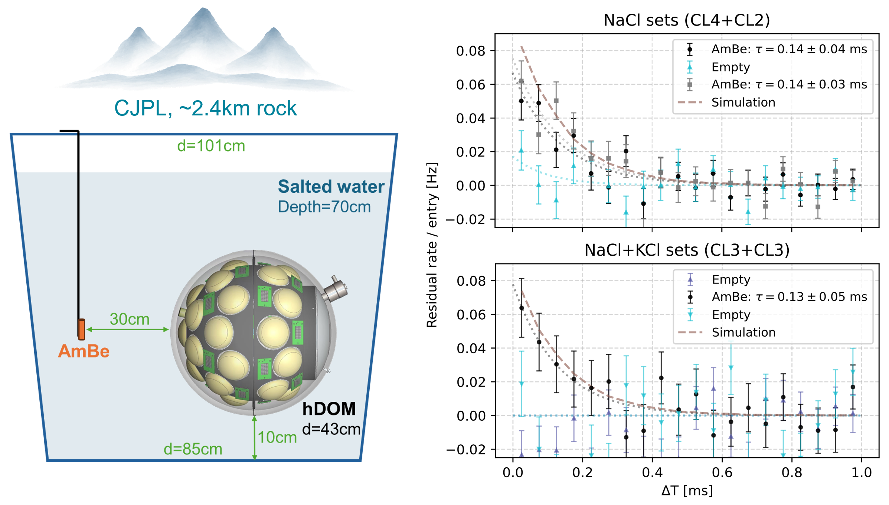
图注：左：锦屏地下实验室的实验布置，hDOM与AmBe中子源置于0.5吨水箱中。右：不同水配置下测得的即时—延迟时间差ΔT分布，已扣除由ΔT大于0.5 ms区域估计的偶然背景。灰色虚线显示模拟中子俘获时间分布。不同数据集对应中子源开启或关闭时独立进行的hDOM测量。
怎么看这张图：源开关比较和短时间的指数结构检验中子俘获原理。图里的扣背景点不是独立超新星事例；NaCl与加KCl样本显著性不同，不能都称超过3.4σ。 支持本文核心论证，并直接对照所存HTML图注核验
来源与置信度：arXiv HTML；source verified；https://arxiv.org/html/2610.30754v1/AmBe_exp.png
强相关工作
本文引用的IceCube低能超新星灵敏度研究代表利用巨大介质和集体计数提升的路线；KM3NeT超新星能力研究则与多PMT符合分析更直接相关。这些工作和本文都研究MeV爆发，却不使用完全相同的介质、模块、背景或超新星模型，因此适合比较方法原理，不宜把图上的距离差全部归因于天然氯。
KM3NeT实时超新星搜索提供从模拟能力到运行触发的相关背景。本文新增天然氯的延迟中子标签及地下盐水原理实验，而实时系统还必须测量全年噪声分布和报警率。检索“multi-PMT coincidence”“seawater neutron capture”可沿这条证据链继续阅读；本日记录不把其他设施的已运行经验当作TRIDENT已完成的现场验证。
同一事件 / 同类源线索：
相似工作：
基础理论 / 方法工作：
相反观点 / 张力线索：
（未提供）
3. General-purpose equations of state for hadron-quark matter: first application to accretion-induced phase transitions in neutron stars
- 来源：arXiv / astro-ph.HE
- 链接：https://arxiv.org/abs/2610.30233
- 作者：János Takátsy, Henrique Gieg, Tim Dietrich
- 公告 / 来源日期：2026-10-23
- 阅读层级：重点精读
- 评分：novelty 8/10，importance 8/10，relevance 8/10，final 9.00/10
- 推荐理由：含中微子不透明度的相变EOS与GR模拟给出无抛射物反例及强中微子辐射
中文题目：含夸克物质与中微子不透明度的状态方程：吸积诱发相变未必抛出物质
做了什么：中子星吸积增重后，中心可能跨过强子—夸克一阶相变；此前有模拟预言相变可驱动物质抛射和电磁暂现源。本文构造五套有限温混合物质状态方程，并加入夸克相的中微子吸收不透明度，再对其中三套作广义相对论辐射流体模拟。模型覆盖不同相变强度，同时保持相近的冷星相变起始质量与约两太阳质量的最大质量，使比较更集中于相变性质。
作者在选定模型中没有找到满足向外运动及非束缚能量条件的抛射物；强相变却可产生峰值约$10^{52}$ erg/s的中微子光度。这是对“相变必有明亮电磁暂现源”的条件性反例，而非排除所有相变事件。计算通过瞬时增加约0.4%密度触发演化，时长约10 ms，并非从真实长期吸积开始一直演化至爆发；这一区别直接限定其天体物理适用范围。
为什么重要：冷星质量—半径曲线不足以决定动态相变的观测信号。相变释放或重分配的能量还要经过热压、成分变化和中微子输运，才能决定外层是否真正逃逸。本文将这些过程放进同一有限温状态方程与输运计算，并公开可复用的状态方程和不透明度，使“相变强弱—动力响应—中微子辐射”可被系统比较；它同时表明外层膨胀不能自动算作抛射物。
理论 / 观测 / 仪器方法价值：方法价值在于把微观相平衡、弱相互作用吸收与宏观流体诊断一起检查。选择不同相变强度、比较相同触发方案，再以能量条件区分束缚大气和真正逃逸，可避免仅凭密度图误判电磁辐射前景。分辨率测试还揭示界面数值加热会改变最高温度，提醒读者中微子光度不仅依赖状态方程，也依赖界面处理与输运近似。
为什么应该关注：对多信使研究，最直接问题是一次核心重排会把能量送到哪一类可观测信使。这里中微子强、无抛射物的组合为筛选模型提供了反例，但没有给出地球探测器的检出显著性，不能从源光度直接宣布可观测。后续应比较真实吸积历史、旋转、输运方法和相同初值的独立代码，再把随时间的能谱折叠到具体探测器。
展开详细解读：文章讲解、背景、理论、重点章节、图表与相关工作
文章详细讲解
科学问题：在冷状态方程上出现不稳定区或第三族星支，是否就意味着真实星体会猛烈塌缩、把外层抛出？热化会增加压力，中微子带走能量和轻子数，二者都能改变相变路径。作者要检验的是在有限温、含输运条件下，吸积触发的核心转变究竟形成稳定混合星、持续振荡还是物质逃逸，而非只展示一条冷质量—半径曲线。
作者怎么做：强子侧采用DD2，夸克侧采用两味弦翻转相对论平均场模型，通过相平衡构造有限温表。五套BBKF 2.1–2.5的密度跳变从约0.79降至0.29；动力模拟选强、中、弱三套。BAM代码采用广义相对论流体与灰色M1中微子输运、八分体对称和非旋转初值，瞬时提高密度触发超出原稳定状态的演化。
关键结果：最强相变模型形成显著夸克核心并产生强烈中微子辐射，中等模型核心较小且演化较缓，弱相变模型主要振荡。三者均未出现满足伯努利非束缚条件并向外运动的物质。外层可以抬升或形成束缚大气，不能将其质量直接用于千新星式光变估算；源中微子光度峰值也不等价于给定距离上的事件数。
局限和下一步：瞬时增密约0.4%相当于人为加质量约0.0062太阳质量，初始度规未同时重求，约束违反随后由演化阻尼。附录说明直接Bondi吸积需要不现实条件，真实缓慢吸积可能被热压阻止跨支。模拟仅约10 ms、无旋转，夸克非弹性散射未包含且灰输运压缩了能谱信息；结论应限制在这些设置内，而非宣布所有吸积相变都无电磁信号。
关键结果是怎么做出来的
第一步构造可比较的状态方程族。夸克相的标量与矢量相互作用控制低密度禁闭倾向和高密度刚度，等矢量项控制成分不对称。作者调整参数，让不同相变跳变模型仍可支持约两太阳质量冷星，并保持相变起始质量相近。图2的双星支或连续稳定支是动态计算的背景，不是观测到两类中子星的证据。
第二步加入夸克相中微子吸收。电子中微子与下夸克、反中微子与上夸克的带电流反应改变电子比例并交换能量；粒子数和能量平均不透明度使用不同能量矩，不能拿同一个平均量处理所有输运。物质与被困中微子共同决定平衡成分，冷、无中微子β平衡不再是唯一参考。
第三步采用统一触发和数值框架。初始星具有很小的混合核心，再整体增密使其发生重排；最高分辨率约0.1 km，七层网格。这样的设计使三个状态方程能直接比较，但它不模拟前期伴星供给和长期散热，因此“吸积诱发”描述的是动机与触发方向，不能误读成完整双星吸积计算。
第四步读图4的时序。强相变约毫秒尺度形成核心，界面附近可达约20 MeV，成分和中微子发射随之变化；其他模型的辐射显著较弱或呈不同振荡。作者区分热效应与成分扩散，图5进一步比较电子比例偏离平衡的程度。这使光度峰值有物理来源，却仍依赖平均输运和界面加热。
第五步检验“抛出”而非“膨胀”。作者对向外物质使用伯努利判据，未找到非束缚抛射物。与先前研究的差异涉及初值、外层结构和输运，不能只将不同结果归因于某一项。附录用三档分辨率展示界面温度随网格改善而变化，说明仍应把数值加热视作强中微子峰值的不确定来源，不能仅因总体趋势相似就称完全收敛。
展开背景、理论、公式、模型和章节导读
背景知识
中子星中心密度可超过核饱和密度数倍，强子是否转变成去禁闭夸克仍未确定。一阶相变意味着两相在某些热力学条件下共存并可伴随密度跃变，但具体跃变、温度依赖和转换动力学取决于模型。本文选择一族可供天体模拟使用的现象学状态方程，不声称已从第一性原理确定真实QCD相图。
状态方程把密度、温度和成分连接到压力与能量。在冷、β平衡的理想化极限，一条质量—半径关系可出现两个稳定分支，其间由不稳定区分隔；相同质量不同半径的构型常称孪生星。现实星体跨越这些分支时会产生热量，因而不能简单沿冷曲线瞬时滑到另一支。
吸积增加重子质量并压缩核心，看似容易触发相变；然而缓慢吸积同时伴随加热与冷却。热压力可能使星体停留在热强子支，只有足够的质量输入或能量损失才进一步改变状态。这正是本文附录讨论不现实吸积速率的原因，也说明人为触发实验与天体自然演化回答不同层次的问题。
中微子既是信使也是动力学参与者。高密度中微子可被困住，改变轻子平衡；在较外层释放时又带走热量。电磁暂现源则需要可辐射的外部物质或能量沉积，不能只凭核心释放巨能量推断。本文把“核心热起来”“中微子变亮”“物质逃逸”分别测量，是理解多信使结果的关键。
基础理论 / 方法脉络
相平衡要求两相在温度、压力及有关守恒荷化学势上匹配。本文先处理强子和夸克部分，再一致加入电子贡献，避免重复计算轻子压力。混合区的密度和能量由体积分数加权，而压力与化学势服从平衡条件；不能任意平均两条独立压力曲线制造相变。
两味夸克模型只有上、下夸克和电子等指定自由度。标量相互作用改变有效质量，矢量相互作用改变有效化学势，后者能提供足够高密度压力。参数受冷星性质引导，但不同参数组合可能产生相似质量—半径曲线，有限温及中微子不透明度才进一步区分动力响应。
夸克带电流反应把成分演化与输运连接起来。中微子吸收率受费米占据和有效粒子性质影响，并需要与发射满足平衡关系。灰色M1只演化若干积分矩，以闭合关系描述角分布；它比不含输运更丰富，但不能完全替代多能群、完整角分布的玻尔兹曼输运。
判断逃逸必须考虑压力焓和引力束缚。在近似稳态、绝热外流中，伯努利常数可判断物质到无穷远是否仍有正能；动态时空和相互作用会限制这个诊断的严格性。因此论文同时要求向外速度，并在有限模拟时间内报告未找到满足条件的物质。这比“密度向外移动了”更强，却仍不是无限时长定理。
公式与推导
先定义夸克相重子数与电中性，按本文两味设置：
每个夸克重子数为三分之一，电荷分别为$2/3$和$-1/3$；所有$n$为数密度。这两项约束让成分、重子密度与电子比例相互关联，不能独立任选。
两相平衡可概括为
下标$H,Q$分别表示强子和夸克，$B,C$为重子与电荷化学势。具体实现须遵循原文轻子剥离和再加入的约定，不能将包含电子的总压力再加一次电子项。
设夸克体积分数为$\chi$，混合密度满足
这里每项须采用一致的物质组分与能量零点。此式是体积加权，不意味着相变区压力也可随意线性插值；压力仍受前式平衡条件约束。
相变强度可用无量纲密度跳变表示：
文中五套模型约从0.79降到0.29。跳变越强通常越可能影响稳定性，但是否形成稳定混合星还取决于高密度刚度，不能只用$\Delta_n$一个数断定动态结局。
夸克相的主要带电流通道是
它们同时改变电子比例和辐射场。相应β平衡关系可写$\mu_d+\mu_{\nu_e}=\mu_u+\mu_e$；被困中微子化学势不为零时，平衡电子比例会不同于冷的无中微子极限。
灰输运中数目和能量平均不透明度的教学表达为
$f_\nu$为占据分布，$E^2$来自相空间测度，多一个$E$用于能量加权；二者同为逆长度单位，却一般不相等。这解释不透明度不能只存一个常数。
被困轻子数的教学预算为
局部反应可在这些分量间转移轻子数，输运则能改变局部总量。将电子比例变化完全理解为“物质接近无中微子β平衡”会遗漏被困辐射的作用；本文的平衡对照必须连同能量和轻子约束使用。
采用$c=1$时，本文非束缚诊断为
$h$为单位静质量的比焓，$u_t$为四速度协变时间分量，$\epsilon$为比内能。它来自近似稳态流中无穷远能量要求；单有向外速度不够。三套模拟未找到同时满足条件的物质，因此只能报告这些设置下的无抛射物。
从源光度到探测计数还需额外折叠：
这是教学延伸而非本文已完成的探测器预报。靶数$N_T$、距离$d$、能谱平均截面及效率缺一不可；$10^{52}$ erg/s的峰值很短，不能替代时间积分和能谱。至此，微观成分、输运、外流判据与观测边界形成连续推理链。
模型拟合 / 应用方法
本文主要是模型构造与前向模拟，并未对一组真实相变事件拟合参数。DD2强子模型固定，夸克相若干耦合参数改变相变强度及刚度，并检查冷星最大质量和相变起点。五套模型是有控制的基准族，不是状态方程后验分布；其相近冷星性质也不能证明有限温行为已被观测约束。
动力输入为非旋转、略含混合核心的平衡构型，随后人为整体增密。程序在既有度规上启动，引入的约束误差由阻尼处理；这与每步自洽添加真实吸积流的边界条件不同。附录讨论Bondi吸积失败和热压阻挡，读者应把触发机制的不确定性保留在最终天体解释中。
数值检查包括不同状态方程与是否有输运的对照。附录的无中微子输运分辨率实验延伸至约30 ms，采用约0.15、0.12、0.1 km三档网格；正式含输运计算因界面伪加热而限制在10 ms内。界面处最高温度随分辨率改变，提示混合相边界数值耗散仍影响局部加热。图9的趋势支持识别这一误差来源，却不能据此给全部中微子光度赋一个很小的统计误差。
模型失败方式还包括遗漏的夸克非弹性散射、灰输运能谱近似、八分体对称限制及短时间窗口。作者指出某些散射影响可能达数十个百分点；这与随机采样误差不同。要解释先前抛射物结果的差异，需要严格匹配初值、外层质量和输运的逐项比较，而非简单将本文宣称为对另一代码的完全复现。
重点章节 / 结果段落怎么读
先读II节状态方程和表1，再看图2：先确认哪些参数改变相变、哪些冷星性质保持相近，避免把冷星分支结构直接当作动力轨迹。
接着读夸克不透明度和初值部分：理解带电流反应、被困中微子和增密触发各如何进入计算，特别标记非现实吸积历程这一限制。
读III节图4与图5时同时看温度、电子比例、核心和光度时序：寻找同一物理过程的对应变化，而不是只摘取最高中微子光度。
最后读附录A–C和图9：检查Bondi吸积为何不适用、束缚外层如何与真正抛射区分，以及分辨率怎样改变界面温度，再回头判断电磁信号结论的范围。
关键图表与解读
图4

图注：随半径和时间变化的角平均电子比例$Y_e$（第一行）、温度（第二行）、静质量密度（第三行），以及中心静质量密度的时间演化（第四行）和不同中微子种类的光度（最后一行）。光度以延迟时间为横轴。三列从左到右分别对应BBKF 2.1、2.3和2.5状态方程。角平均变量图中的红色虚线标出按$Y_q/3$=0.05及0.95计算的相变下、上边界。
怎么看这张图：按列对照核心、温度和中微子时序，强相变不等于外层已逃逸。最后一行的源光度尚未折叠距离与探测响应；应与无抛射判据和分辨率图一同阅读。 支持本文核心论证，并直接对照所存HTML图注核验
来源与置信度：arXiv HTML；source verified；https://arxiv.org/html/2610.30233v1/figures/PT_evolution.png
图9
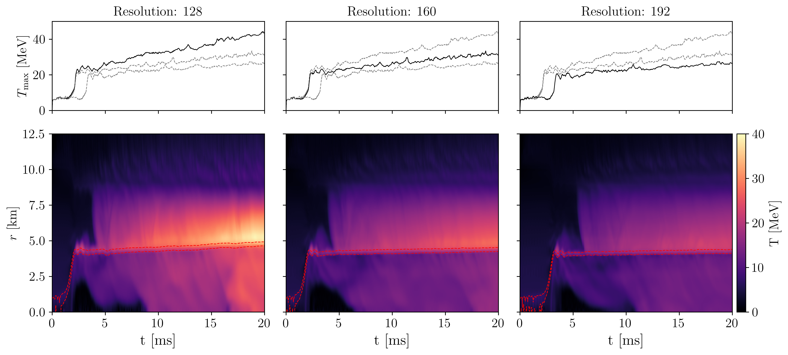
图注：最高温度的时间演化（上）和不同半径处角平均温度的时间演化（下）。从左到右分辨率增加，每层每方向分别使用128、160和192个网格点，对应约0.15、0.12及0.1 km空间分辨率。下方图中的红色虚线标示相变区的下、上边界。
怎么看这张图：重点看最高温度及界面热结构随网格变化，辨认数值加热对物理解释的影响。该检查没有把所有光度或抛射物结果变成无误差结论。 支持本文核心论证，并直接对照所存HTML图注核验
来源与置信度：arXiv HTML；source verified；https://arxiv.org/html/2610.30233v1/figures/3D_heating.png
强相关工作
本文沿用Bastian的有限温强子—夸克状态方程框架，并以DD2及弦翻转模型构造可比较的参数族。基础工作提供热力学拼接方法，本文新增用于特定动力问题的模型族与夸克中微子不透明度。检索“finite-temperature hybrid EoS”“quark neutrino opacity”有助于区分冷星结构约束和输运输入。
Largani等的吸积系统相变研究是直接存在结论张力的比较对象，其一维含输运设置曾得到物质抛射。本文未在相同全部设置下重复该实验，因此“未抛射”首先是一个新条件下的反例，不能归结为先前结果已被推翻。适合下一步做匹配初值与输运的比较；源论文引用关系已核实，本日报不把比较双方当作独立观测证据。
同一事件 / 同类源线索：
相似工作：
（未提供）
基础理论 / 方法工作：
相反观点 / 张力线索：
4. Early panchromatic spectra reveal helium in the thermonuclear supernova 2024kce
- 来源：arXiv / astro-ph.HE
- 链接：https://arxiv.org/abs/2610.30674
- 作者：Abigail Polin, Dillon Hasenour, Sahana Kumar, Willem Hoogendam, Jing Lu, Daniel Polin, Danielle Dickinson, Braden Garretson
- 公告 / 来源日期：2026-10-23
- 阅读层级：重点精读
- 评分：novelty 8/10，importance 8/10，relevance 8/10，final 9.00/10
- 推荐理由：极早三条氦线同速为双爆轰提供具体新证据，需核替代识别
中文题目：SN 2024kce早期光学—近红外光谱中的氦证据与双爆轰解释
做了什么：白矮星表面氦先爆轰、再触发碳氧核心爆轰的“双爆轰”模型预言外层可能留下未烧尽的氦，但能否在观测光谱中可靠辨认长期困难。作者对SN 2024kce取得16条光学与5条近红外光谱，其中峰前约11天的一组在一小时内覆盖0.42–2.5微米。约1.024微米的吸收若归于氦I 1.083微米，对应约16400 km/s；若归于碳I 1.069微米，则约12770 km/s。作者结合其他氦线、离子速度与辐射输运模型，更支持氦参与该特征。
一套0.69太阳质量碳氧核心加0.09太阳质量氦壳的双爆轰模型可重现早期主要颜色及谱线，计算中留下约0.051太阳质量氦。非局域热力学平衡处理氦和镁后，谱线形态更接近观测；局部放射性灰烬的非热激发是让氦可见的重要条件。这是一例支持低质量双爆轰的有力个案，但模型并非唯一反演，碳混合贡献不能完全排除，后期近红外与部分光学谱线仍有偏差。
为什么重要：只看到一个近红外吸收凹陷，无法唯一确定元素，更不足以确认爆炸通道。本文的推进是用近同时宽波段光谱、不同跃迁的速度一致性及含非热激发的辐射输运建立组合证据，让“氦壳引爆”得到更直接的观测检验。其外层高速氦更接近抛射物组成，而不是窄线星周相互作用；这一辨析对热核超新星与钙丰富暂现源之间的关系有价值，但不能由单例统一所有族群。
理论 / 观测 / 仪器方法价值：最值得借鉴的是把谱线归属当作多假设问题：每个候选离子都要同时解释速度、其他跃迁是否出现、时间演化及模型中的空间成分。氦的可见度不能只由质量丰度决定，还依赖非热电子与非局域热力学平衡能级占据。对高能供能与光学响应的连接，局部放射性沉积如何激发外层物质是可迁移的物理思想，前提是有相应输运和多波段证据。
为什么应该关注：这项工作把爆炸核合成产生的放射性物质、非热电子沉积和可观测谱线连接起来，可帮助理解“有某元素却看不到线”或“线很强但质量不大”的情形。下一步应关注更早且同时的1与2微米光谱、定量的地球大气吸收残差，以及多维和成分混合模型。本文没有伽马射线或中微子对应体测量，不应硬把此例当作已建立的高能源。
展开详细解读：文章讲解、背景、理论、重点章节、图表与相关工作
文章详细讲解
科学问题：1.024微米宽吸收是氦还是碳，决定了是否直接触及双爆轰的外壳物质。二者静止波长相近，单线拟合都可能给貌似合理的速度；而爆炸外层的速度随位置有系统层次。作者需要证明多个特征在同一物理模型下相容，而不是从一处吸收最低点完成元素鉴定。
作者怎么做：组合早期光学与近红外观测，检验氦1.083和2.058微米以及可见光弱线，同时比较碳线与Si II所指示的光球速度。用Cattails流体爆炸模型生成不同核心和氦壳质量的抛射物，再用Sedona辐射输运处理光谱；氦和镁采用非局域热力学平衡，其余元素采用设定的近似。多个相位共同检验候选模型，而不只匹配一个时刻。
关键结果：氦归属给约16400±120 km/s，明显高于约12500±170 km/s的Si II光球速度，符合氦在外层的图像。2.058微米等线提供辅助证据，但部分光学氦线受混线影响。最佳展示模型有外层13300–22000 km/s的未烧尽氦，并在更内侧留下碳；因此氦主导与少量碳混合可以共存，不应将判别写成非此即彼。
局限和下一步：模型选择基于早期颜色、线速度和一项尚未完整发表的峰值r波段亮度，不是全光变联合似然或唯一质量后验。模型比峰值约亮0.2等，氧线和硅线不完全匹配，峰后约8天近红外差异增大。地球大气吸收尤其影响2.058微米区域，后期一条近红外校准也只能作定性比较。需要更完整的光度数据、多维爆炸和非热处理检查参数唯一性。
关键结果是怎么做出来的
先建立对象距离与环境。作者采用M49约16.5±0.5 Mpc距离，暂现源投影距星系中心约61.4 kpc。背景星系的较大红移解释会要求极端亮度和谱线速度，故不支持将其归为背景对象。Rubin图像揭示附近弥散光，为宿主环境提供线索，但本文没有给出可直接用于定量族群年龄推断的完整低面亮度限制。
再控制观测的时间和校准。峰前FIRE近红外与IMACS光学在一小时内获得，减少快速演化暂现源拼谱时的相位差。近红外以匹配时间和气团的A0V标准星处理地球大气吸收；这一步尤其影响2微米附近弱线，因此宽波段覆盖不是自动消除仪器或大气误差。
第三步是谱线竞争。1.024微米特征按氦和碳两个静止波长分别换算速度，再检查其他氦线是否在一致速度出现。碳9406和11330埃等特征只属暂定识别，C II 6580埃并不明显；氦5876埃亦与Ti、Si混合。图4把这些辅助窗口一起展示，证据来自组合而非某一条线的形式显著性。
第四步是爆炸与输运连接。模型网格总质量约0.74–0.84太阳质量、氦壳约0.05–0.14太阳质量，选中的0.78太阳质量模型留下约0.051太阳质量氦及约0.01太阳质量碳。氦位于比碳更快的外层，并与放射性灰烬位置相关；非热电子可激发中性氦，解释为何仅有热平衡丰度不足以产生所见线。
第五步是检验模型不是孤立线模板。图5比较同时开关氦、镁非局域平衡的计算，说明各元素通过电子密度、温度和辐射场耦合，谱线变化不能简单相加。早期主要趋势吻合，后期和部分离子仍失配；晚期富钙而较弱铁特征把对象放在快速下降Ia与钙丰富暂现源之间，却不足以认定这两类都来自相同爆炸通道。
展开背景、理论、公式、模型和章节导读
背景知识
碳氧白矮星可由伴星吸积氦。若外层氦发生爆轰，激波可能压缩并点燃核心，这称双爆轰；白矮星不一定先长到钱德拉塞卡质量。外壳燃烧产生的灰烬会影响颜色与谱线，残余氦又可能直接留下通道信息，因此这一情形需要同时解释核合成和辐射特征。
超新星抛射物高速膨胀，光谱吸收通常来自朝向我们的物质对内侧连续辐射的遮挡，因此相对静止波长蓝移。吸收最低点近似指示一部分线形成区速度，不等于整个元素只有该速度，也不等于直接测得元素总质量。不同离子静止波长接近时，必须借助其他跃迁和分层模型。
氦的激发能较高，在温度已经下降的热核抛射物中，仅靠热碰撞可能难以形成强线。放射性衰变产生高能粒子，经降能形成非热电子，可以改变激发和电离。于是相同氦质量在不同放射性混合和沉积条件下可有完全不同的谱线强度，“没有氦线”不能简单等同于“没有氦”。
局域热力学平衡把能级占据主要写成局部温度与电子密度的函数；稀薄、快速膨胀且受非热粒子作用的外层往往不满足这一条件。非局域热力学平衡需要求跃迁速率与辐射场的耦合。本文对氦、镁专门处理正是为解决这一难点，但其余元素和几何仍有近似，不能把一个更复杂模型视作全部物理已无误差。
基础理论 / 方法脉络
线识别首先连接静止波长与膨胀速度。非相对论近似在几百分之一光速时便于直观比较，但论文数值识别应遵循其拟合定义和误差。这里氦解释对应更高速度，恰好需要氦位于光球外层；碳解释速度更接近光球，二者的空间预期可用模型成分剖面检验。
爆炸后近似匀速同源膨胀使位置与速度一一对应，密度随时间快速下降。随着光球退向较慢内层，不同元素的线出现或消失能提供分层线索；但光深、激发与电离也在同时变化，所以不能只凭线消失断言该元素已完全不存在。
同源膨胀下的大速度梯度使窄共振区域主导谱线吸收，Sobolev光深将能级占据、振子强度和膨胀时间联系起来。强线取决于处在下能级的粒子数量，而非全部氦原子。因此由一条吸收深度反推氦质量，必须给出非热沉积和原子能级模型。
放射性灰烬释放的能量先经过输运，再分配给加热、电离与激发。氦和镁的处理还会反馈改变电子密度与辐射场，故分别开关某元素的非局域平衡不是线性分解光谱。本文展示这种耦合后，最佳模型应理解为一套自洽近似下的可行解，尚不是唯一的爆炸参数测量。
公式与推导
从谱线到速度，教学上的一阶蓝移关系是
$\lambda_0$为静止波长、$\lambda_{\rm abs}$为宿主静止系吸收位置。相同1.024微米特征用1.083或1.069微米作$\lambda_0$得到不同速度，这正是需要其他跃迁判别的原因；论文报告速度以其拟合值为准。
近似同源膨胀给出
$t$从爆炸开始计而不是从光学峰开始计。速度可作为成分层的坐标；图7中未烧尽氦位于更高速外层，必须与观测线速、而非仅线深比较。
在同一速度壳层质量守恒时，教学密度标度为
壳层体积随$t^3$增大，密度下降将降低碰撞率并改变光深。因此跨相位光谱能检验模型的成分与激发演化，而不是把早期最优谱线模板平移到所有日期。
大速度梯度近似下，标准Sobolev线光深写为
此式为教学补充，采用cgs单位；$f_{lu}$为振子强度，$n_l,n_u$与$g_l,g_u$为上下能级数密度与简并度。它说明氦总质量不直接等于光深，关键是能级人口。
非局域平衡的稳态速率结构可示意为
$P_{ij}$包含辐射、碰撞和非热跃迁等速率，单位为每秒。实际输运还要耦合电离平衡与辐射场；这里用于解释本文为何需超出局部温度的处理，不能用这条简式替代Sedona计算。
局部放射性供能的教学预算是
$X_k$为相关放射性核素质量分数，$\dot q_k$为每质量衰变供能，$f_{\rm dep}$为沉积比例。本文讨论氦壳灰烬中的铬48、铁52和镍56等成分；沉积在何处与总放射性质量同样重要，不能只用整体峰值亮度决定氦激发。
沉积能量还要分配为
这是能量守恒的教学划分。非热激发项可以在热碰撞不足时维持氦线，电离项又改变电子密度；因此氦、镁的非局域平衡开关会相互反馈，不构成可以任意叠加的独立光谱分量。
光谱最后经辐射输运映射为强度，示意为
$I_\nu$为比强度，$\alpha_\nu$为逆长度吸收系数，$j_\nu$为发射系数；膨胀系统还需频率变换与散射耦合。谱线归属必须同时满足前述成分、激发和传播，不能只在一条曲线上加入氦标签。
若未来做完整联合拟合，可定义教学诊断
$a,b$可跨波长和相位，$C$应含校准和相关误差；这不是本文已给出的全局似然。作者当前用颜色、线速及有限光度挑选可行模型，因此本文质量数值不能被赋予这项未实施拟合的后验精度。
模型拟合 / 应用方法
观测输入包括峰前至峰后光学序列、五次近红外和宿主距离，模型比较主要集中于峰前约11.8天到峰后约6.2天。光度校准与宿主距离影响绝对亮度，地球大气校正影响个别近红外窗口。选模使用的峰值r约13.5等尚来自未完整发表的光变信息，因此本日不把该部分称为公开可重跑的完整联合光度拟合。
爆炸网格改变总质量与氦壳质量；Cattails采用球对称流体、指定核反应网络和点火混合区。优选0.69加0.09太阳质量只是该网格中兼顾早期谱线、速度与颜色的模型。不同点火、混合、维度和反应处理可能改变残余氦与灰烬，不能将网格最优值当作无模型依赖的直接称量。
辐射输运对氦与镁采用完整非局域平衡，其他元素使用较简化处理。图5的不同组合揭示共享电子与辐射场造成非加性响应。观测可支持氦参与，但不必要求1.024微米全部来自氦；模型成分本身允许内层碳存在，应避免将辅助碳线的暂定识别写成被严格排除。
具体残差包括模型峰值约亮0.2等、O I 7773埃不足、Si特征偏弱以及后期近红外失配。晚期约39天近红外使用跨日期标准星校准，作者仅作定性解释；不能据此量化很小的晚期线比差异。下一步需要完整多波段光变、统一误差模型和多维非热输运，才能检验参数退化及爆炸通道的唯一性。
重点章节 / 结果段落怎么读
先读宿主与观测方法、表1：核对距离、相位定义和近同时光学/近红外覆盖；后期校准限制要在读晚期谱之前标记。
再读图3/4的线识别：对氦和碳分别换算速度，逐个检查辅助跃迁与混线区域。重点是不同波段证据能否共同支持外层氦，而非只看最深吸收。
随后读模型方法和图5/7：将成分所在速度层与非热激发联系，理解氦质量、线光深和非局域平衡不是一一对应。
最后看图6及模型残差讨论：比较快速下降Ia和钙丰富对象的相似与差异，把个案支持、族群关联及尚未解决的谱线分别记录。
关键图表与解读
图4
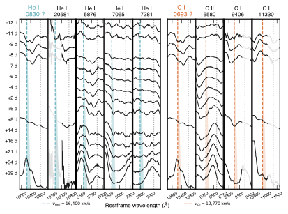
图注：分析1.024微米特征。彩色虚线分别表示峰前11天近红外谱中该特征按氦I（蓝）和碳I（橙）识别所推得的速度。阴影楔形用于引导视线，其右边缘对应特征最低点；灰色点线为静止系波长。面板按预期线强排列。作者判定氦I 20581及7065埃为正检出，氦I 7281埃以及碳I 9406、11330埃为暂定检出，并据此推断氦I 1.083微米与碳I 1.069微米都对1.024微米特征有贡献。
怎么看这张图：要同时核对不同跃迁的速度一致性与混线。图注忠实保留作者的检出措辞；本日报不将其转换为未报告的统一统计显著性，也不把氦贡献写成排除了碳。 支持本文核心论证，并直接对照所存HTML图注核验
来源与置信度：arXiv HTML；source verified；https://arxiv.org/html/2610.30674v1/HevC_wedge.svg
图5
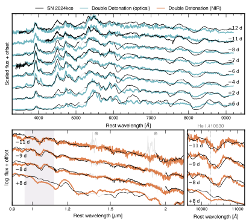
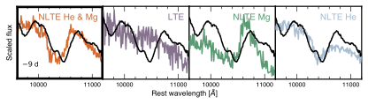
图注：双爆轰模型与SN 2024kce光谱行为的比较。（a）黑线为SN 2024kce，模型为0.69太阳质量白矮星加0.09太阳质量氦壳；上方是光学谱比较（模型青色），下方是近红外谱比较（模型橙色），并放大作者归于氦I 1.083微米的1.024微米特征。（b）辐射输运中启用四种不同非局域热力学平衡元素组合所得的1.024微米特征：局域平衡模型（紫）在此处不产生特征；仅氦非局域平衡（蓝）和仅镁非局域平衡（绿）显示两元素在1微米区域均有贡献；同时处理氦和镁（橙）可重现观测特征。
怎么看这张图：看模型是否同时解释多波段而非只命中一个凹陷。氦和镁通过共同电子密度、温度及辐射场耦合，四条曲线不是可线性相加的元素模板；优选模型也仍有其他谱线残差。 支持本文核心论证，并直接对照所存HTML图注核验
来源与置信度：arXiv HTML；source verified；https://arxiv.org/html/2610.30674v1/modelspectra.svg；https://arxiv.org/html/2610.30674v1/NLTEversions.svg
强相关工作
本文参考文献中的Nomoto（1982）、Livne（1990）和Woosley与Weaver（1994）提供表面氦触发与亚钱德拉塞卡爆炸的基础动机，可由原文参考文献入口核对。它们是模型谱系，不能替代本对象的观测证据；阅读时应区分氦壳是否引爆、是否引爆核心、又有多少氦未燃尽这三个不同问题。
同一参考文献表中的Collins等（2023）“Helium as a signature of the double detonation in Type Ia supernovae”直接讨论氦的观测诊断，Polin等（2019、2021）则连接亚钱德拉塞卡模型、早晚光谱与钙丰富现象。本工作增加近同时全色光谱和针对SN 2024kce的非局域平衡比较；相关性来自可核验引文，不意味着所有快速下降Ia或钙丰富暂现源已被证明共享同一个前身。
同一事件 / 同类源线索：
相似工作：
基础理论 / 方法工作：
相反观点 / 张力线索：
（未提供）
相关简报
1. Chandra and Multiwavelength Study of Pevatron Candiate HESS J1702-420A
- 来源：arXiv / astro-ph.HE
- 链接：https://arxiv.org/abs/2610.30378
- 作者：Hui Yang, Yichao Lin, Jeremy Hare, Seth Gagnon, Oleg Kargaltsev
- 公告 / 来源日期：2026-10-23
- 阅读层级：相关简报
- 评分：novelty 7/10，importance 8/10，relevance 10/10，final 9.40/10
- 推荐理由：Chandra分解PeVatron场点源及弥散结构，重要关联但7角分偏移未解决
中文题目：HESS J1702–420A 附近发现更清晰的脉冲星风云候选，物理关联仍未确定
问题、方法与结论：HESS J1702–420A 的极硬百TeV辐射可能指向银河系高能粒子加速器，但此前模糊的X射线弥散源不足以识别发动机。作者合并三次、共50.42 ks的Chandra观测，将XMMU J170147.3–421407分解为仅17个光子的点源Src11和东西两叶弥散结构。0.5—7 keV谱用吸收幂律及适合少计数的W统计联合拟合；固定共同吸收后，两叶光子指数为1.3±0.3、1.7±0.3，Src11为1.4±1.0，误差均为68%口径。形态、硬谱和缺乏可信近红外对应体共同支持脉冲星及其风云解释。
意义与贡献：推进在于把候选发动机与周边同步辐射结构空间分开，而不是发现了脉冲或确定了TeV源起源。Src11的机器分类中子星概率66%只是训练模型输出；已有分类遗漏铁线和跨任务变异，不能替代物理鉴别。
可借鉴之处：可借鉴的是先做Gaia绝对位置校正，再结合深近红外图像复查机器候选。固定吸收使两叶谱差减弱，提示不能把自由吸收拟合下的软化直接解释成电子冷却；低计数源的表观变异也须由联合谱误差复核。
局限与关注点：Src11与TeV中心相距约7角分；假设4.7 kpc、200 km/s得到约47 kyr运动时间，却不能解释不规则双叶方向。射电壳也未确认。后续应测自行、搜脉冲并改善空间谱，而非据位置和 光度相容宣称轻子PeVatron已找到。
图2
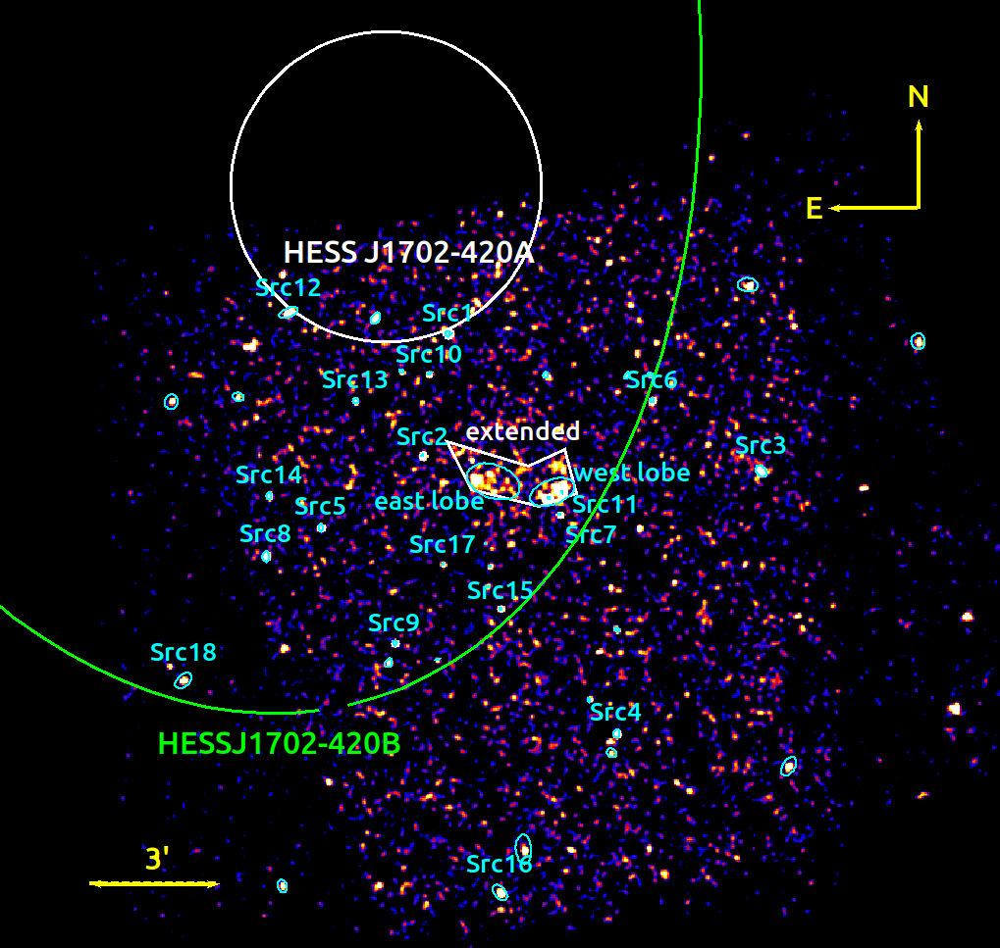
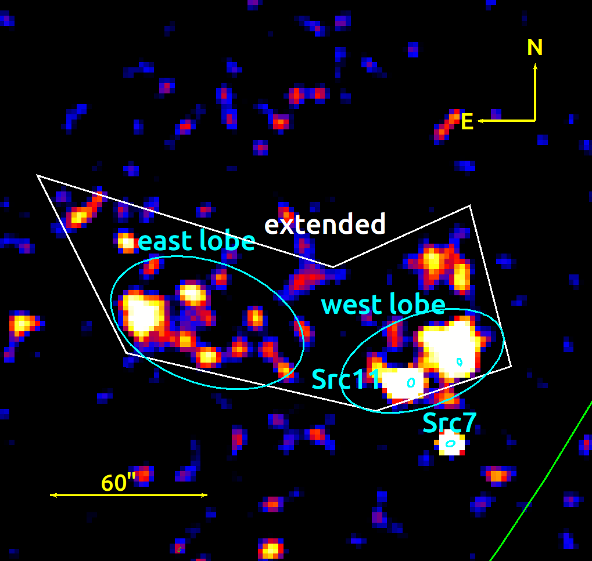
图注：左：0.5–8 keV叠加钱德拉图像，按4倍合箱，并用半径3像素、σ=1.5像素的高斯核平滑，以对数强度显示。青色椭圆标出wavdetect探测的X射线源；显著性大于5σ且本文分析的源标有名称。东西两瓣以青色椭圆表示，用于整体延展辐射提谱的区域为白色多边形。HESS J1702–420A与B的1σ位置不确定区分别以白色和绿色叠加。右：XMMU J170147.3–421407周围延展辐射的放大图。
怎么看这张图：形态是寻找脉冲星风云候选的线索，平滑图不能替代事件级统计。X射线结构与HESS A相隔约7角分，现有结果不足以确认PeVatron对应体。 支持本文核心论证，并直接对照所存HTML图注核验
来源与置信度：arXiv HTML；source verified；https://arxiv.org/html/2610.30378v1/Chandra_image.png；https://arxiv.org/html/2610.30378v1/Chandra_zoom.png
2. Multigroup Radiation Diffusion with Compton Scattering on a Moving Mesh: Implementation in RICH and Application to Tidal Disruption Events
- 来源：arXiv / astro-ph.HE
- 链接：https://arxiv.org/abs/2610.31324
- 作者：Itamar Giron, Menahem Krief, Elad Steinberg
- 公告 / 来源日期：2026-10-23
- 阅读层级：相关简报
- 评分：novelty 8/10，importance 7/10，relevance 9/10，final 9.00/10
- 推荐理由：多群康普顿核守恒和大时间步验证可迁移TDE辐射模拟
中文题目：把康普顿能量交换纳入多能群辐射流体模拟
问题、方法与结论：作者在移动网格RICH中加入精确热康普顿核的多能群离散算子，以半隐式耦合推进气体和辐射，并逐能群对修正细致平衡。均匀平衡测试中，纯散射保持光子数约至$10^{-14}$、总能量约至$10^{-15}$，并趋向满足能量与光子数约束的玻色–爱因斯坦谱。随后模拟0.5太阳质量恒星被百万太阳质量黑洞撕裂：近心点激波附近康普顿过程可显著增加X射线能群能量。
意义与贡献：方法改进将“散射改变方向”和“散射交换能量”放进同一个可核验求解流程，适合研究潮汐瓦解早期辐射。局部X射线产生率很高并不自动等于该过程贡献了同样比例的逃逸X射线，这是本研究清楚保留的边界。
可借鉴之处：可借鉴先用独立常微分方程解检验平衡、守恒和时间步，再看三维流体诊断。只散射时不应强迫辐射达到零化学势黑体；较大时间步保持数值有限也不代表时间演化准确，更不等于无条件稳定。
局限与关注点：只有一套含康普顿模拟，缺少同初值关闭该过程的对照，也未逐份追踪光子能量逃逸。十能群中X射线仅两群，中心引力势被平滑并排除诊断，薄区使用通量限制扩散近似。早期光变依赖光球面定义，因此当前不能将其当作特定TDE的已验证辐射机制。
图15
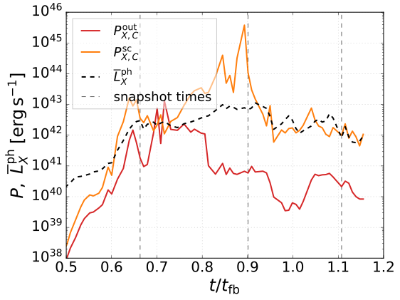
图注：按原文式VIII.13计算的康普顿X射线功率：X射线光球外产生的功率$P_{\rm out}$，以及X射线热化半径与光球之间散射层产生的功率$P_{\rm sc}$；同时显示式VIII.3的全天平均X射线光度。竖直虚线与图8相同，对应0.66、0.90和1.11个回落时间。
怎么看这张图：局部即时产能可超过逃逸光度，却不等于已测得同样比例的逃逸X射线由康普顿产生。还需能量追踪和关闭康普顿的匹配对照模拟。 支持本文核心论证，并直接对照所存HTML图注核验
来源与置信度：arXiv HTML；source verified；https://arxiv.org/html/2610.31324v1/xray_power.svg
3. $γ$hosts from the past: reheating neutron stars with supernova-sourced ALPs
- 来源：arXiv / astro-ph.HE
- 链接：https://arxiv.org/abs/2610.30255
- 作者：Debajit Bose, Sougata Ganguly, Tanmoy Kumar, Nirmal Raj
- 公告 / 来源日期：2026-10-23
- 阅读层级：相关简报
- 评分：novelty 8/10，importance 7/10，relevance 9/10，final 9.00/10
- 推荐理由：超新星束缚ALP盆再加热给新窗口，需核中子星热史与产生耦合
中文题目：用冷中子星约束引力束缚的类轴子云
问题、方法与结论：超新星产生的重类轴子粒子若速度不足以逃出新生中子星，会形成束缚云；日后衰变的光子被恒星吸收，可使老中子星重新升温。作者以一套18.8太阳质量超新星模型计算产生、束缚与衰变，再用PSR J2144–3933的哈勃紫外上限限制额外加热。采用约3.33亿年的年龄及指定星体参数，温度上限约3.4万K对应光度约1.4×$10^{27}$ erg/s；这给出1–400 MeV质量范围内的条件性耦合限制，并与年轻仙后座A的冷却条件比较。本文没有检出新粒子或额外热辐射。
意义与贡献：约束不要求类轴子构成暗物质，而利用恒星自身产生的粒子库存；它补充了只看超新星瞬时能损的探针。耦合太大时粒子早已衰变殆尽，太小时今天加热太弱，因此允许区与排除区不能理解成简单单向上限。
可借鉴之处：可借鉴“早期注入—引力留存—寿命耗减—晚期能量沉积”的统一预算。复用时须同时给定核子耦合、光子耦合、粒子质量、超新星温度历史、束缚比例和中子星年龄，不能仅将观测温度代入一条通用曲线。
局限与关注点：核子耦合采用指定基准且与光子耦合独立，并非一般QCD轴子关系。核子轫致辐射和较不确定的π介子转换影响库存；星龄、包层及冷却模型影响加热预算。约2000 K冷星带来的更强限制是未来预报，不能当作已有观测。
图3
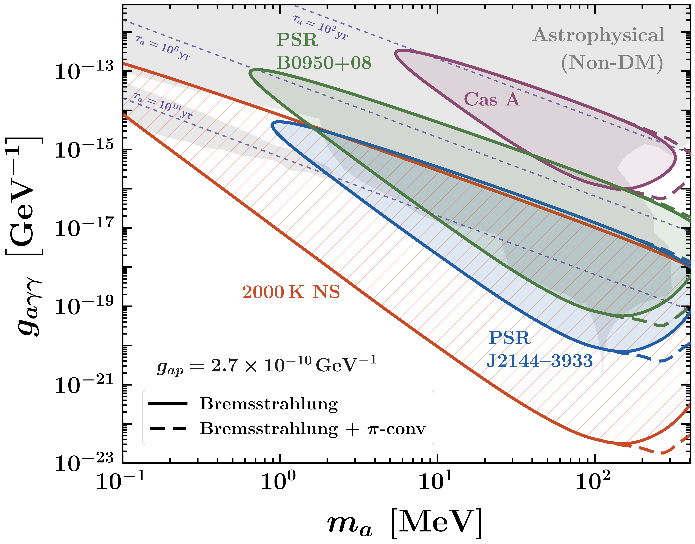
图注：由表1中中子星光度与年龄测量得到的类轴子—光子耦合随类轴子质量的限制，以及JWST、ELT和TMT未来若探测到2000 K中子星可达到的灵敏度。粒子产生分别只计核子—核子轫致辐射，或另加入π介子转换；固定质子耦合$g_{ap}$=2.7×$10^{-10}$ GeV^-1以满足超新星冷却限制［原文33］。曲线止于$m_a=3m_\pi$；更高质量时通常开放的三π衰变会大幅压低双光子通道，使限制迅速减弱。图中还画出等寿命轮廓；这些类轴子即使寿命长于宇宙年龄，也不构成宇宙暗物质。同时显示其他针对非宇宙暗物质类轴子的天体物理限制［78–80］，详见第三节。
怎么看这张图：先辨认现有冷星限制和未来2000 K预报，再固定核子耦合读光子耦合。过快衰变会耗尽老星附近库存，因此曲线形状不同于单调能损上限。 支持本文核心论证，并直接对照所存HTML图注核验
来源与置信度：arXiv HTML；source verified；https://arxiv.org/html/2610.30255v1/alp_photon_limits.png
4. A Generalized Framework for Rapid Polarization Response Generation in Wide Field-of-View Compton Polarimeters
- 来源：arXiv / astro-ph.HE
- 链接：https://arxiv.org/abs/2610.31559
- 作者：Mohamed Gamal Zaid, Merlin Kole, Mark McConnell, Fabio Muleri, Hancheng Li
- 公告 / 来源日期：2026-10-23
- 阅读层级：相关简报
- 评分：novelty 8/10，importance 7/10，relevance 9/10，final 9.00/10
- 推荐理由：康普顿离轴完整谐波响应减少MC且以POLAR核验，仪器方法可迁移
中文题目：用两个偏振角模拟加速离轴康普顿偏振响应
问题、方法与结论：作者数值积分旋转后的Klein–Nishina散射截面，处理离轴投影和能阈对方位角分布的影响。仅用非偏振模拟的模式1较快，但忽略部分偏振相关仪器效应；模式2加入0°与45°两套全偏振模拟，用双角谐波重建其他角度。对POLAR实测GRB 170114A及多亮度注入，模式2的偏振后验与完整模拟接近：实测偏振度分别约17.1%与16.6%，误差约8个百分点。
意义与贡献：响应模拟从每能量61个偏振角降到两个，可降低时间分辨和大视场偏振分析的成本。这里证明的是在测试配置下重建完整响应的能力，不能将后验接近视为新增高显著性偏振发现。
可借鉴之处：可借鉴保留非输入角度作验证，并在已知真值注入中逐渐提高亮度，观察统计误差缩小后系统偏差何时暴露。模式1在极亮、高偏振注入下会低估偏振度约数个百分点，单纯增加非偏振模拟数无法补上缺失的仪器依赖。
局限与关注点：表中约20倍节省为按模拟数量线性缩放的时间估计；响应构建约13秒才是工作站实测。模式2匹配的是完整GEANT4基准，该基准在部分极亮低偏振注入中也偏离真值，仍受有限模拟统计限制。迁移到其他仪器必须重新验证质量模型、阈值与偏振响应线性。
图18
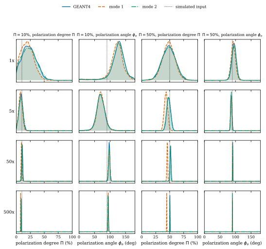
图注：表2模拟GRB网格的偏振度和偏振角后验分布，输入偏振度为10%（左两列）及50%（右两列），偏振角均为90°。分别使用GEANT4完整响应、模式1响应和模式2响应拟合；各行对应不同能量流量倍数，点线标示模拟输入值。
怎么看这张图：亮度升高后模式1的固定偏差变得可见，模式2更接近完整响应。但完整响应在部分极亮低偏振注入中也偏离真值，重现基准并不代表仪器系统误差为零。 支持本文核心论证，并直接对照所存HTML图注核验
来源与置信度：arXiv HTML；source verified；https://arxiv.org/html/2610.31559v1/fig16_fluence_grid.svg
5. CURTAIN: Towards a Foundation Model for Neutrino Telescopes
- 来源：arXiv / astro-ph.IM
- 链接：https://arxiv.org/abs/2610.30894
- 作者：Severin Magel, Felix J. Yu, Carlos A. Argüelles
- 公告 / 来源日期：2026-10-23
- 阅读层级：相关简报
- 评分：novelty 8/10，importance 7/10，relevance 9/10，final 9.00/10
- 推荐理由：时域掩码预训练提升角能重建并迁移几何，需核模拟域和公平基线；全文核验仅简化NuBench模拟、单种子且跨几何需10万标签全微调，未验证真实探测器或隔离掩码贡献，重要性降为7，保留方法简报。
中文题目：CURTAIN：以时间遮挡预训练改善中微子望远镜重建
问题、方法与结论：中微子望远镜把光子记录成位置、到达时间和电荷的点云。CURTAIN随机选一个时刻，只给编码器此前脉冲，再让解码器判断查询位置之后会不会亮起，并辅助预测首光时间，从而减少随机遮挡时就近插值的捷径。作者在简化NuBench径迹模拟中，以390万事件预训练220万参数DeepIce，再用10万有标签事件全量微调；同几何中位角误差由3.22度降至1.78度，绝对对数能量误差由0.0651降至0.0448，分别改善45%和31%。
意义与贡献：同一架构从零训练的对照支持预训练有效，且在未参加预训练的flower_l几何上，角误差由3.25度降至2.09度。这里的迁移包含目标几何10万标签微调，不是无需标定即可换真实探测器。
可借鉴之处：设计价值是编码器始终只见完整可见脉冲，保留时空距离注意力；查询只带位置，不依赖固定传感器编号。训练集与预训练、验证和测试事件不重叠，容量及脉冲上限匹配，这些是复现时必须保留的比较条件。
局限与关注点：目前仅简化介质、光模块和电子学模拟，所有数值来自单次训练，没有种子方差；其他自监督方法还换了编码器，无法孤立证明时间遮挡造成全部收益。高能事件的768脉冲截断影响22%测试事件。下一步应做遮挡消融、多种子和真实噪声/校准迁移，不能把角误差提升直接当作点源发现灵敏度提升。
图3
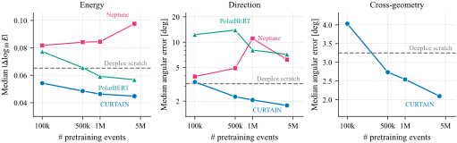
图注：在10万个带标签事件上微调后，下游性能随预训练事件数的变化。左、中：在同样用于预训练的hexagon几何上，CURTAIN与Neptune、PolarBERT基线的能量误差和角误差中位数；角误差轴为对数刻度。右：在预训练未见过的flower_l几何上CURTAIN的角误差中位数。虚线为用相同带标签事件从头训练的DeepIce。
怎么看这张图：跨几何结果仍经过目标几何上10万标签微调，不是零样本迁移。比较发生在简化模拟基准；重建误差改善尚不是实测点源发现灵敏度提升。 支持本文核心论证，并直接对照所存HTML图注核验
来源与置信度：arXiv HTML；source verified；https://arxiv.org/html/2610.30894v1/fig_finetune_ema.svg
6. The deepest X-ray view of a kiloparsec scale jet at z=6.1
- 来源：arXiv / astro-ph.HE
- 链接：https://arxiv.org/abs/2610.30259
- 作者：Fabio A. Meanti, Luca Ighina, Alberto Moretti, Kyra Bettwy, Alessandro Caccianiga, Thomas Connor, Fabrizio Tavecchio, Silvia Belladitta
- 公告 / 来源日期：2026-10-23
- 阅读层级：相关简报
- 评分：novelty 7/10，importance 7/10，relevance 9/10，final 8.70/10
- 推荐理由：最远喷流360ks新增空间谱约束，机制区分仍受光子统计限制
中文题目：钱德拉解析红移6.1耀变体的千秒差距X射线喷流
问题、方法与结论：作者合并PSO J0309+27的22次钱德拉观测，总曝光360.2 ks，先校正相对天体测量，再分离核区与两个延展结构。喷流区域有84个计数，估计背景12.7个、核点扩散函数泄漏约2.15个；径向分布支持结构在角秒尺度延展。固定银河吸收柱密度后，用含泊松背景的W统计拟合，完整喷流光子指数为2.25（90%区间约−0.44/+0.45），静止系2–10 keV光度约1.3×$10^{45}$ erg/s，约为核区的18%。
意义与贡献：在如此高红移直接分开核与大尺度喷流，为研究早期宇宙中的喷流辐射提供了少见观测。证据较强的是空间延展；喷流更软、沿程冷却及逆康普顿机制的判断，受限于大得多的光谱误差。
可借鉴之处：可借鉴逐次对齐、局部背景、核PSF泄漏估计和径向分布的联合核验。比较高低红移样本时，必须把短曝光难以发现低面亮度喷流的选择效应与宇宙微波背景能量密度增加分开。
局限与关注点：微波背景逆康普顿解释虽有物理动机，现有光谱和少量高红移样本并不能唯一确认。AXIS同曝光可获得约1500个喷流计数的结果来自响应模拟，是未来条件预报。更深观测仍需结合射电及不同辐射模型，不能把18%的光度比单独当作演化证据。
图1
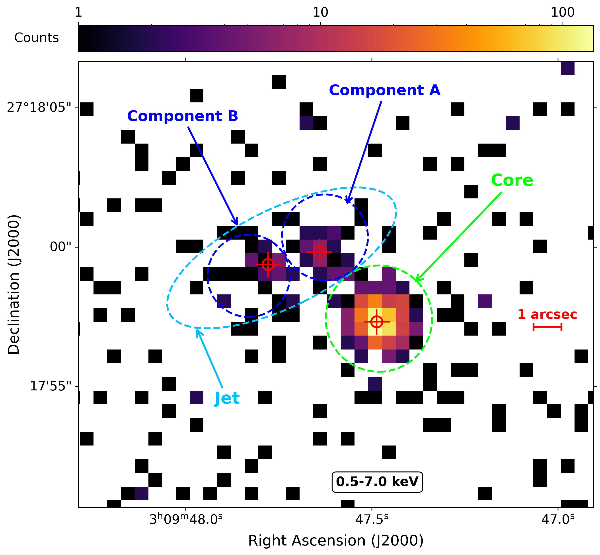
图注：由总曝光360.2 ks的完整钱德拉数据得到PSO J0309+27的0.5–7.0 keV图像。颜色为每像素计数的对数刻度；为保留原生角分辨率和内在面亮度分布，未作空间平滑或曝光/流量归一化。绿色虚线圆标出紧致核提取区；蓝色虚线椭圆为延展喷流A、B成分，青色虚线椭圆包围整体大尺度相对论喷流。红十字为对应成分的光子加权质心，标尺为1角秒；北朝上、东朝左。
怎么看这张图：先看核外计数与分区，再结合径向剖面和背景检验判断延展；颜色本身不是流量图。喷流空间延展的证据强于其详细辐射机制和沿程谱软化的约束。 支持本文核心论证，并直接对照所存HTML图注核验
来源与置信度：arXiv HTML；source verified；https://arxiv.org/html/2610.30259v1/Figures/x_ray_zoom.png
7. Nuclear Millimeter Continuum Emission in Radio-Quiet Active Galactic Nuclei: an ALMA Spectral and Variability Study
- 来源：arXiv / astro-ph.HE
- 链接：https://arxiv.org/abs/2610.30286
- 作者：Sophie M. Venselaar, Claudio Ricci, Yoshiyuki Inoue, Chin-Shin Chang, Akihiro Doi, Noemi Barnier, Taiki Kawamuro, Susanne Aalto
- 公告 / 来源日期：2026-10-23
- 阅读层级：相关简报
- 评分：novelty 7/10，importance 7/10，relevance 9/10，final 8.70/10
- 推荐理由：九AGN准同步毫米谱及短变支持紧致非热源，但盘冕与喷流仍退化
中文题目：九个射电宁静活动星系核的毫米谱与短时变
问题、方法与结论：作者选择九个近邻、低遮挡的射电宁静活动星系核，取得100、145和233 GHz准同步ALMA观测，并比较相隔4–11天的两次100 GHz曝光。三频幂律谱指数约−0.05至0.88；AX J1737.4–2907、IRAS 05078+1626和NGC 4593分别出现约56%、44%和30%的变化，按论文误差模型超过3σ。快变给出约$10^{3}$–1.4×$10^{4}$引力半径的区域尺度上限；亮温下限支持紧致同步辐射成分。
意义与贡献：这把毫米辐射来自大尺度尘埃的解释与紧致成分区分开来，但尚未把盘冕和紧致喷流分开。只有三个显著变源获得这一额外证据，不能将结论无条件扩展到全部射电宁静AGN。
可借鉴之处：分析用匹配成像、相位自校准与校准源稳定性检查保护时变测量；对有延展结构的目标再检验中心峰是否单独变化。三频数据不足以自由拟合同步自吸收三参数模型，作者选择约束较少的谱指数描述，这一取舍值得复用。
局限与关注点：毫米波准同步不等于毫米与X射线同步：相关分析采用多年平均X射线光度。样本又预先偏向预期盘冕辐射强的目标；厘米外推不能排除未解析平谱核。尺度是上限且依赖黑洞质量，不是直接测得X射线冕半径，需更密集同步监测。
图4
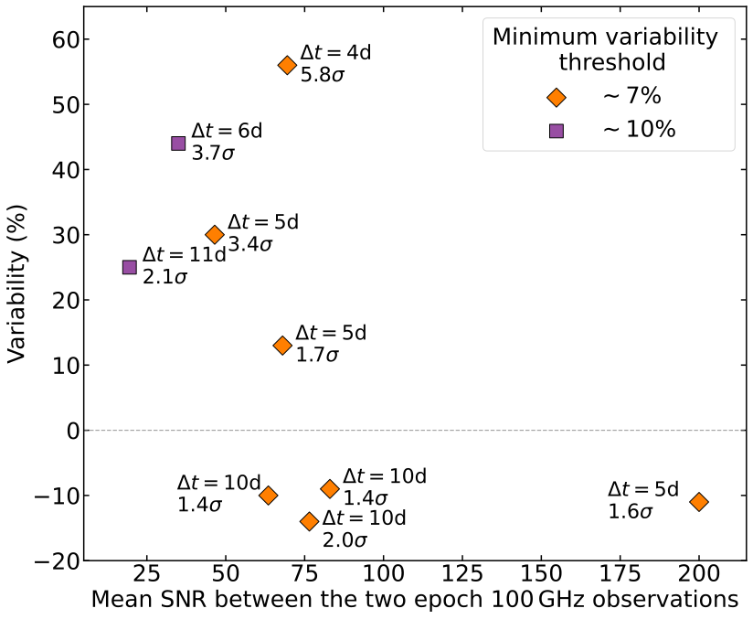
图注：两次100 GHz观测间测得的相对变化幅度随平均信噪比的变化。每个源的最小变化阈值按第四节第二小节的总流量误差确定。超过7%（Ark 120与IRAS 05078+1626为10%）的变化，再按显著性分为暂定或显著；图中对各源注明显著性及两次观测间隔天数。大于3σ的变化判为显著。
怎么看这张图：7%或10%是误差尺度，不等同于3σ门槛。三个显著变源支持紧致成分，其他源未显著变化不能据此排除更短时间变化或较弱变幅。 支持本文核心论证，并直接对照所存HTML图注核验
来源与置信度：arXiv HTML；source verified；https://arxiv.org/html/2610.30286v1/SNR_vs_variability.svg
8. Weak Radio and Bright Early Optical Emission in EP260321a: A Comparative Study with XRO 080109 Reveals the Role of Circumstellar Material Mass
- 来源：arXiv / astro-ph.HE
- 链接：https://arxiv.org/abs/2610.30973
- 作者：Cui-Yuan Dai, Xiang-Yu Wang, Jian-He Zheng
- 公告 / 来源日期：2026-10-23
- 阅读层级：相关简报
- 评分：novelty 7/10，importance 7/10，relevance 9/10，final 8.70/10
- 推荐理由：EP260321a射电上限与早光学约束CSM质量，模型非唯一
中文题目：EP260321a的弱射电与早期亮光学支持致密星周壳层
问题、方法与结论：作者把EP260321a/SN 2026gzf与XRO 080109/SN 2008D比较，联合X射线激波突破、射电同步辐射和首日光学冷却。先对后者多频射电作六参数拟合，再固定其微物理参数，用EP事件的射电上限扫描风密度和最快壳层速度：在选定密度范围得到约0.02–0.08c上界。软X射线和早光学可由约2×$10^{13}$ cm、质量约0.06太阳质量的致密壳层解释：壳层减慢激波并储存随后释放的热量。
意义与贡献：同一环境因素可以解释“X射线较强、射电较弱、首日光学更亮”的组合，提供比单波段拟合更紧的物理检查。这里的星周质量是冷却模型推断，并非直接称量；射电只给条件性上限。
可借鉴之处：可借鉴把突破最外薄层的即时X射线能量与整层被加热后储存的内能分开，避免把两者误作同一预算。还应分别追踪致密内壳与晚期射电采样的外风，不能以一个风密度贯穿全部半径。
局限与关注点：把电子和磁场能量份额改为0.1后，速度上界可变为约0.03–0.13c，说明“低于0.1c”并非模型无关结果。约4天的光谱速度较高，需后续供能解释；光子匮乏的分层壳、茧及中心引擎仍未被全面排除，不能据此把所有EP软暂现源归为同一机制。
图4
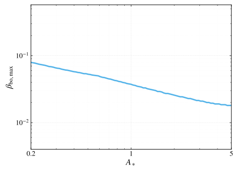
图注：EP260321a最快壳层速度的射电限制：最大允许速度$\beta_{\rm bo,max}$随风密度归一化$A_\ast$变化。对每个$A_\ast$，要求风环境中的单一前向激波同步辐射不超过任何射电上限，从而求得$\beta_{\rm bo,max}$。其余参数固定为参考普通超新星激波突破事件XRO 080109/SN 2008D的最佳拟合值。
怎么看这张图：这条曲线展示密度—速度条件关系，并不是模型无关的速度测量。更改电子与磁场能量份额可移动上限，使用时须连同固定参数报告。 支持本文核心论证，并直接对照所存HTML图注核验
来源与置信度：arXiv HTML；source verified；https://arxiv.org/html/2610.30973v1/beta_bo_max_vs_Astar_1sigma_bestfit.svg
9. Prompt Jet Launching and Delayed Thermal Disk in Tidal Disruption Event for Prolonged Activity GRB 220706A
- 来源：arXiv / astro-ph.HE
- 链接：https://arxiv.org/abs/2610.31484
- 作者：Yuri Sato, Rin Oikawa
- 公告 / 来源日期：2026-10-23
- 阅读层级：相关简报
- 评分：novelty 7/10，importance 7/10，relevance 9/10，final 8.70/10
- 推荐理由：GRB220706A早喷流晚热盘统一方案，遗存磁通为关键外加条件
中文题目：以早期喷流和晚期成盘解释GRB 220706A：一个条件性TDE方案
问题、方法与结论：GRB 220706A的X射线耀发延续约51天，晚期又出现热光学成分。作者提出：恒星被黑洞潮汐撕裂后，少量碎片先向内流动，搬运已有盘的磁通并启动喷流；其余碎片稍后圆化成盘，提供约$10^{6}$秒时出现的热辐射。采用高消光校正、指定辐射效率及圆化时间约等于回落时间，数量级关系对应约$10^{5}$太阳质量黑洞和约50太阳质量、20太阳半径恒星。
意义与贡献：这为长时间引擎活动与延迟热成分建立了一个共同供能框架，避免只把光学峰与高能耀发分别拟合。但全文是可行性估算，不是对TDE与坍缩星模型的统计判优，也没有独立确认中等质量黑洞。
可借鉴之处：有用的做法是同时检查早期内流、圆化、辐射温度和磁通预算；所需视界磁场约$10^{8}$ G来自对先存磁通的高效集中，文中约$10^{5}$ G是先存盘磁场剖面外推的归一化，两者不能混写。
局限与关注点：圆化效率、磁场几何、磁通捕获和热光球半径均为关键假设，尚待全球磁流体模拟。对延展恒星的喷流突破困难也依赖采用的引擎寿命。参数标度对穿透因子和效率很敏感，应视作基准估计；长达约$10^{9}$秒的持续供给是未来可检验预报，不是已看到数十年喷流。
图1
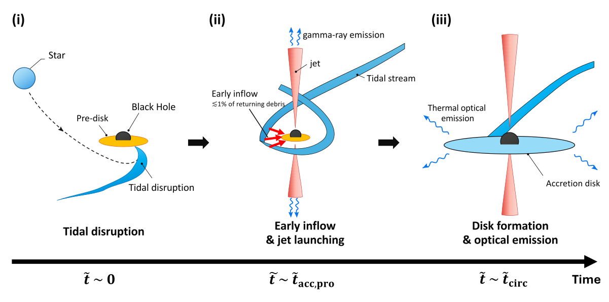
图注：GRB 220706A的拟议潮汐瓦解事件方案示意。（i）恒星被一个周围已有磁化盘的黑洞撕裂（图中记为t̃=0）。（ii）碎片返回近心点时，少量（不超过约1%）向内流动，将先存盘磁通带向黑洞，可能在t̃约为早期吸积时间时，通过Blandford–Znajek机制驱动早期相对论喷流。（iii）更晚时，回落碎片圆化形成主吸积盘，其热辐射解释约$10^{6}$秒时观测到的延迟热光学成分。
怎么看这张图：这是物理方案示意，不是数据拟合图。原图将瓦解标为t̃=0，而正文式10以首次回落为零点，时间符号存在不一致；正文解读按先后过程和明确时间间隔说明，不能用示意轴做精确计时。 支持本文核心论证，并直接对照所存HTML图注核验
来源与置信度：arXiv HTML；source verified；https://arxiv.org/html/2610.31484v1/GRB220706A.svg
10. Lomb-Scargle Recovery of Periodic Binary Signals across Black Hole Mass and Cadence
- 来源：arXiv / astro-ph.HE
- 链接：https://arxiv.org/abs/2610.30772
- 作者：Karan Akbari, Sayantan Bhattacharya
- 公告 / 来源日期：2026-10-23
- 阅读层级：相关简报
- 评分：novelty 7/10，importance 7/10，relevance 9/10，final 8.70/10
- 推荐理由：周期恢复率随质量光度指派反转，适合警惕预报选择效应
中文题目：周期黑洞双星的恢复率取决于光度指派和采样
问题、方法与结论：作者把正弦与锯齿周期信号注入带阻尼随机游走噪声的模拟类星体光变，使用TNG100质量/红移与DR7条件光度指派，比较PTF、Stripe 82和LSST式采样。每个系统用10万条纯噪声曲线设分频箱阈值，并分别统计“超过阈值”与“周期误差小于15%”。固定绝对星等时，高质量恢复率下降；按DR7指派星等后趋势反转。高质量样本PTF正弦恢复率39.8%，LSST式为76.9%，后者与参考工作22.6%的差异大部分尚未解释。
意义与贡献：贡献是揭示效率预报的条件依赖，而不是报告新双黑洞。质量与光度共同改变红噪声幅度，不能把一个亮类星体样本的平均恢复率套到整个黑洞质量函数。
可借鉴之处：注入研究应将频率网格、信号形状、已知/估计噪声参数、季节空档和真正找回周期的判据逐项固定。文中在相同时间基线比较观测夜晚的排布，说明平均采样间隔本身不足以描述周期搜索能力。
局限与关注点：阈值使用真实噪声参数，真实巡天还需估计这些参数；约2.5×$10^{-4}$的每曲线假警报上界只对该零假设成立。低质量光度依赖外推，PTF仅49套候选采样且有档案缺夜；TNG并合也不是已解析亚秒差距双星。尚未解释的效率差异应作为复现问题保留。
图4
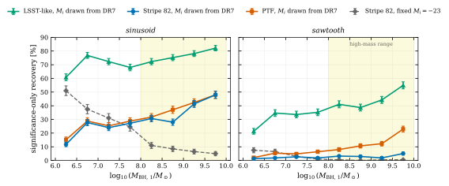
图注：八个宽0.5 dex的主黑洞质量箱中，仅要求显著（不检查周期）的恢复率；左为正弦，右为锯齿信号。DR7指派绝对星等且每系统10万条零假设曲线的LSST式、Stripe 82及PTF采样分别为三角、圆和方块；固定$M_i$=−23且1万条零假设曲线的Stripe 82结果为菱形虚线，仅可比较趋势。周期均匀取自30–779天，Stripe 82为200–1100天。阴影为log $M_1$在8至10的高质量范围。误差为二项误差，PTF另因共享采样而加宽。
怎么看这张图：实线与固定星等虚线的趋势反转说明光度指派的重要性，二者零假设模拟数不同，不能直接比较绝对高度。这里也不要求找回正确周期。 支持本文核心论证，并直接对照所存HTML图注核验
来源与置信度：arXiv HTML；source verified；https://arxiv.org/html/2610.30772v1/fig1_recovery_vs_mass.svg
11. FRB 20210601A: Extreme Temporal Clustering in a Repeating Fast Radio Burst Source as Evidence for a Hidden Class of Episodic Repeaters
- 来源：arXiv / astro-ph.HE
- 链接：https://arxiv.org/abs/2610.31365
- 作者：Ryan Mckinven, Amanda M. Cook, Alice P. Curtin, B. M. Gaensler, Jason W.T. Hessels, Naman Jain, Lordrick Kahinga, Victoria M. Kaspi
- 公告 / 来源日期：2026-10-23
- 阅读层级：相关简报
- 评分：novelty 8/10，importance 7/10，relevance 8/10，final 8.65/10
- 推荐理由：106.5秒九暴而七年320小时其余无检出，量化极端间歇及选择偏差；全文显示仅一个源、人口规模9正200负8且复发时间未约束，异频率率比较未校正，隐含新种群尚未建立，降为相关简报。
中文题目：FRB 20210601A：两分钟内九次爆发，揭示短暂活跃的选择效应
问题、方法与结论：CHIME在2021年6月1日的106.5秒内记录九个独立触发，此前和此后至2025年底约320小时累积曝光均无追加检出。观测是每日约10分钟的片段，不能说连续监看七年。作者核对触发重复、旁瓣频率响应和两次基带数据，发现谱窄带性主要受波束影响；局部八个等待间隔与泊松过程相容，蒙特卡洛KS检验p=0.31，但这一活跃率无法延续到后续主瓣经过时段。
意义与贡献：它展示时间平均重复率会掩盖极短爆发风暴。九次检出均在旁瓣；按经验能量流率分布校正到主瓣约为21次，但这是依赖分布斜率的估计。无可靠周期、宿主或高能对应体，因此尚未识别触发机制。
可借鉴之处：有用做法是把仪器波束、曝光片段和源活动状态一起建模，区分单次风暴内的随机性与跨年非平稳性。偏振与色散的小变化受系统误差影响；不能把形式拟合误差当作环境快速演化的证据。
局限与关注点：人口玩具模型固定风暴长106.5秒，得到可探测源数9（68%区间1—209），复发时间仍近乎未约束；未来发现数是偏乐观预报，不证明新类别。与FAST最高瞬时率比较尚未统一频段。深度低阈值跟踪可区分真正停机与持续弱爆发，也需扩大样本检验种群解释。
图3
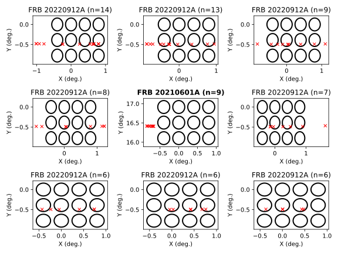
图注：FRB 20210601A（中图）在CHIME/FRB快速傅里叶变换波束内的检出位置，与高重复源FRB 20220912A最活跃的过中天过程［原文23］比较。位置采用望远镜坐标X、Y，分别为东西及南北方向天顶角；各面板注明源名和该次过境检出数n。黑圈表示600 MHz搜索波束在源过境位置附近的半高全宽灵敏度。与其他活跃重复源不同，FRB 20210601A只在部分过境时间内出现，且所有检出均偏离主灵敏度峰。
怎么看这张图：旁瓣检出说明短时活动很强，但不能由这一次活动推定复发周期。把主瓣灵敏度下的预期数量与实际九次检出分开，避免把修正数当观测数。 支持本文核心论证，并直接对照所存HTML图注核验
来源与置信度：arXiv HTML；source verified；https://arxiv.org/html/2610.31365v1/transit_tile_vs_R117.svg
12. Same Events, Weaker Bound: Model Dependence in Magellanic Microlensing Limits on Primordial Black Holes
- 来源：arXiv / astro-ph.HE
- 链接：https://arxiv.org/abs/2610.30510
- 作者：David Morales-Zapien, Lucas Brown, Stefano Profumo
- 公告 / 来源日期：2026-10-23
- 阅读层级：相关简报
- 评分：novelty 8/10，importance 7/10，relevance 8/10，final 8.65/10
- 推荐理由：固定OGLE事件重估晕模型显著放宽PBH界限，强调条件而非发现
中文题目：同一组OGLE事件为何允许更弱的原初黑洞限制
问题、方法与结论：作者保持OGLE麦哲伦云事件、曝光和探测效率不变，重算银河暗晕、大麦云暗晕和恒星透镜族群，再以含事件时标的扩展泊松似然求原初黑洞暗物质比例的95%上限。基准模型相对已发表的“宽松”20年限制最多放宽约1.6倍，极端压力测试约3.4倍；摘要强调的约6.2倍与13.2倍是相对“严格”限制，另含事件归属处理差异。本文并未发现原初黑洞。
意义与贡献：结果显示排除曲线同时包含事件数据与天体物理先验。区分严格/宽松基准后，才能看清新晕模型本身改变了多少；固定事件重算比只按暗物质柱密度整体缩放更能揭示质量依赖。
可借鉴之处：可借鉴逐一恢复模型成分的消融实验：保持效率和时标后验不动，分别测试局部密度、扁率、恒星初始质量函数等。各因素会改变时标分布且互相耦合，单项放宽倍数不可相乘；银河盘变化甚至可使限制更紧。
局限与关注点：晕参数被固定在压低事件率的方向，并未对联合不确定性边缘化；压力测试与部分动力学观测不相容。成团情形约3.4–6倍的行星质量放宽是另加Lyα阈值的条件包络，不是联合后验。仍假定单质量黑洞，不能据此宣布解释了银心短时标事件。
图1
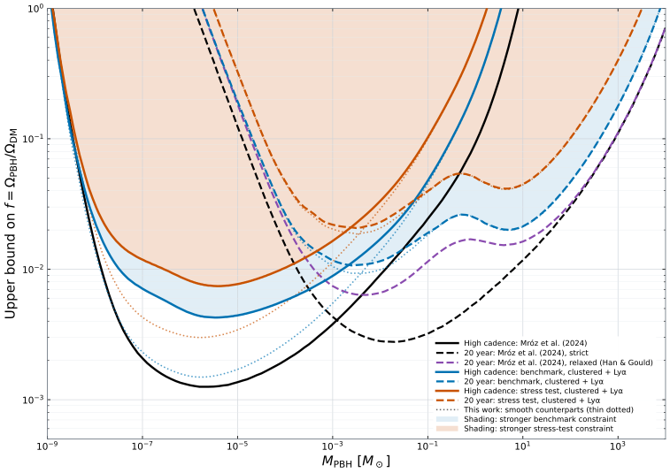
图注：基准模型（蓝）和压力测试（橙）的平滑族群95%上限及成团原初黑洞条件包络。粗彩线为半径30 pc的黑洞团在$f_{\rm PBH}M_{\rm cl}$满足Lyα阈值（补充IX）时的包络，实线对应高采样率巡天，虚线对应20年OGLE-III+IV；细彩色点线为相应未成团限制，正文所述倍数以这些曲线为对象。黑色实线、虚线分别为已发表的高采样率［35］与严格20年［36］限制；紫色虚线是采用Han–Gould盘的已发表宽松20年限制［36］，亦为本文参照。阴影为各模型两条成团包络中较强者所排除的区域。
怎么看这张图：先明确分母是严格还是宽松曲线，再比较放宽倍数。粗线另包含成团与Lyα条件，不能称为统一联合后验，也不构成原初黑洞检出。 支持本文核心论证，并直接对照所存HTML图注核验
来源与置信度：arXiv HTML；source verified；https://arxiv.org/html/2610.30510v1/figure1_r8178_lya860.svg
13. Gravitational Wave Diffractive Images Reveal the Structure of Astrophysical Objects
- 来源：arXiv / astro-ph.HE
- 链接：https://arxiv.org/abs/2610.31441
- 作者：Han Gil Choi, Sunghoon Jung, Volodymyr Takhistov
- 公告 / 来源日期：2026-10-23
- 阅读层级：相关简报
- 评分：novelty 8/10，importance 7/10，relevance 8/10，final 8.65/10
- 推荐理由：衍射形状因子联系透镜结构有新框架，探测比例为未来预测
中文题目：引力波衍射中的形状因子携带透镜内部结构
问题、方法与结论：在线性透镜势及特定驻相近似下，作者把中心衍射像写成点质量振幅乘以投影质量分布的归一化傅里叶形状因子；啁啾频率上升因而依次采样更小横向尺度。完整数值波动光学再比较有限大小透镜、带暗晕黑洞与匹配点质量参照。按指定源族群和五年观测，Cosmic Explorer对有利扩展暗物质模型的比例灵敏度可达约$10^{-5}$，识别带晕黑洞约$10^{-6}$；这些均是未来零检出预报。
意义与贡献：它把“看到透镜效应”和“辨认透镜结构”明确分开，并给波形频率纹理一个可解释的空间意义。投影形状因子不能恢复视线方向的三维深度分布，更不是已观测到暗物质团块。
可借鉴之处：比较模型前先对齐共同的低频总质量响应或高频几何光学像，再检查剩余衍射，能避免把平凡归一化差异误作结构信息。实际预报使用完整数值积分，解析式承担解释作用。
局限与关注点：文中似然近似优化整体幅度、相位与时移，种群预报固定本征双星和透镜参数，并未完成全参数贝叶斯证据。放开这些退化通常降低区分度；阈值亦未针对真实搜索试验次数校准。O4级曲线假定五年单探测器观测，不是O4数据的实测限制；超辐射云范围另依赖乐观近距离几何。
图4
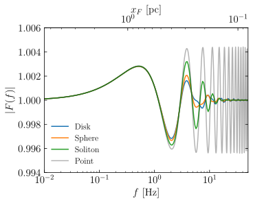
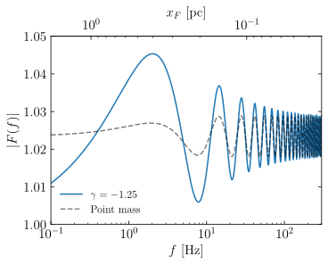
图注：共同透镜特征对齐后仍保留的、依赖质量轮廓的衍射放大因子。左：在相同总质量M与源冲量参数$x_s$、扩展轮廓相同尺度R下，对齐未解析的低频响应；高频逐渐解析内部结构，曲线开始分离。比较均匀盘、均匀球、孤子和点质量，基准为透镜红移0.17、源红移0.3、M=100太阳质量、R=3$x_E$、$x_s$=15$x_E$及$x_E$=0.069 pc。右：把幂律暗晕包裹的点质量与其有效点质量参照的高频几何光学响应对齐；高频相合，低频因暗晕衍射而分离，采用γ=−1.25、透镜/源红移0.17/0.3、M=20太阳质量及$x_s$=0.5 pc。顶部横轴显示对应菲涅耳尺度。
怎么看这张图：左右两栏采用不同的对齐极限，不能把差异读成同一种归一化偏差。它显示指定参照模型间的结构信息；进一步拟合透镜和双星参数会带来额外退化。 支持本文核心论证，并直接对照所存HTML图注核验
来源与置信度：arXiv HTML；source verified；https://arxiv.org/html/2610.31441v1/F_extended_all.svg；https://arxiv.org/html/2610.31441v1/F_dress_125_ex.svg
说明
评分由 LLM 给出初评，再由本地阈值策略过滤；IACT、TeV 伽马射线和高能中微子天文学按重点方向处理。